과천 시대를 맞이한 비상인들이 서로 배려하고 존중하며 즐겁게 일할 수 있는 근무 환경 조성 캠페인
우리의 믿음 내재화
우리의 믿음 테스트
나의 '비상 DNA'는 무엇일까? 7가지 믿음으로 보는 나의 유형
MBTI처럼 쉽고 재미있게 풀어낸 테스트를 통해 나의 일하는 스타일과 핵심 가치를 발견하는 활동
VIVAME 활동 혜택
활동 속에서 자연스럽게 얻게 되는 것들
비바미만의 특별한 네트워크
다양한 부서의 동료들과 함께 성장하는 특별한 인연
직접 기획하고 변화시키는 문화 프로그램
우리가 주도하여 만들어가는 비상의 조직 문화
프로젝트를 주도하며 성장하는 경험
의미 있는 프로젝트를 통해 성장하는 리더십 역량
특별한 리프레시 휴가
한 해 동안의 활약을 기념하는 리프레시 휴가
2026년 40학점 지급
비바미 활동에 대한 학점 인정 및 지원
먼저 경험한 VIVAME의 이야기
선배 비바미 CP님의 활동 후기
김
김OO CP님
사회4 Cell
"업무 현장 너머 회사의 가치를 재발견하는 시간! 회사 안에서 사회 공헌의 가치를 전파할 수 있어서 좋았습니다! 나 하나의 작은 실천이 새로운 변화를 만들어냄을 몸소 체험할 수 있었습니다!"
강
강OO CP님
티칭브랜드전략 Cell
"능력자 동료들과 상상하던 회사를 실현할 수 있는 귀중한 시간! 지금도 회사 곳곳에서 비바미 활동 중 만든 결과물들을 소중하게 보관해 주시는 시피님들을 보면 뿌듯하고 기쁩니다."
오
오OO CP님
구매 Cell
"새로운 도전! 혼자만 생각했던 작은 아이디어들이 함께 공유되는 순간, 가능성으로 번지는 모습을 보았을 때 가장 기억에 남아요!"
이
이OO CP님
통합운영 Cell
"자체 유잼 컨텐츠! 나와 비슷하고 좋은 CP님들과 자연스럽게 교류할 수 있어서 좋았어요!"
황
황OO CP님
법무 Cell
"비상과 비상인을 즐겁게 가치있게 하는 일을 신나게 할 수 있어서 행복했어요."
최
최OO CP님
성장코칭2 Cell
"비바미 활동은 제게 처음엔 낯설고 먼 이야기처럼 느껴졌습니다. 하지만 활동을 거듭할수록 비상교육 CP님들께 소소한 행복을 전달하는 이 활동을 생각보다 즐겁게 임할 수 있었습니다!~"
방
방OO CP님
티칭사업 Core
"내가 원하는 팀에서, 내가 원하는 일을 하고, 그 결과가 비상인들에게 즐거움으로 닿았다는 행복감이 있었습니다."
홍
홍OO CP님
CBS기획운영 Cell
"회사 생활의 새로운 관점을 발견할 수 있는 좋은 기회! 비바미 활동으로 바쁜 업무 중에도 잠시나마 쉼표가 되었다는 CP님들의 피드백을 받았을 때, 실무와는 또 다른 종류의 성취감을 느낄 수 있어 무척 뜻깊었습니다."
김
김OO CP님
경영관리 Cell
"동료들을 생각하며 유의미한 프로젝트를 진행할 수 있어서 좋았습니다!"
류
류OO CP님
초등사회 Cell
"비바미 활동은 '비상인을 하나로 모으는 구심점'인 것 같아요! 우리의 작은 발걸음이 비상의 모든 CP님에게 퍼져나가는 순간을 마주하는 게 가장 인상 깊었습니다. : )"
홍
홍OO CP님
사회5 Cell
"소속 셀, 소속 코어를 넘어선 사람들을 만날 수 있었고, 업무를 넘어선 보람을 느낄 수 있었습니다. 비상인으로서 한 단계를 넘어서고 싶으신 분들께 추천드립니다."
최
최OO CP님
에듀테크플랫폼서비스기획 Cell
"비상교육 하면 여러 문구가 떠오르는데요. 그 중 Top5에 비바미가 꼭 들어갑니다. 자랑스럽고, 뿌듯하고, 즐겁고, 신박하고, 헌신적이고.... 이렇게 다양한 이미지를 갖기가 쉽지가 않은데, 비바미는 그렇습니다. 그런 비바미들 덕분에 회사 생활을 즐겁게 할 수 있었는데, 18기에 제가 그 나눔에 함께할 수 있어서 좋았습니다."
채
채OO CP님
인터랙티브솔루션개발 Cell
"사막의 오아시스와 같은 존재. 나 자신에게도 활력소로 다가왔고 나뿐만이 아닌 다른 직원들에게도 즐거움, 문화, 사회공헌에 대한 영향력 있는 활동이었다."
한
한OO CP님
러닝초등콘텐츠2 Cell
"상상이 현실이 되는 곳! 비상만의 특별한 소통 채널 '비바미'를 통해 회사에 대한 생각과 마음을 공유하고, 다양한 경험을 가진 비상의 시피님들과 함께 프로젝트를 진행할 수 있어 뜻깊은 한해였습니다."
나도 비바미가 될 수 있을까?
가볍게 체크해보는 10초.
조직문화 · 동호회
비상 동호회는CP님의 ‘갓생’을 응원합니다!
일터에서의 열정을 넘어, 좋아하는 것을 함께 나눌 때
우리는 더 큰 에너지를 얻곤 하죠.
운동부터 문화, 소소한 취미까지 —
비상 동호회는 CP님의 일상에 기분 좋은 쉼표를 찍어드려요.
혼자 하기 아쉬웠던 활동들, 이제 동료들과 함께 즐겨보세요. 서로의 관심사를 응원하며 평범한 하루를 특별한 활력으로 가득 채워봅니다.
아래 리스트에서 마음이 가는 활동을 발견하셨나요?
망설이지 말고 동호회 리더 CP님께 가벼운 인사를 건네보세요.
새로운 즐거움이 CP님을 기다리고 있습니다!
동호회 가입 및 신설 방법
기존 동호회에 합류하고 싶다면?
비상의 즐거운 에너지는 언제나 열려 있습니다!
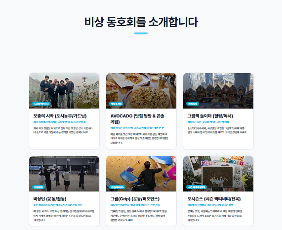
Step 1. 🔍
아래 리스트에서 마음이 가는 동호회의 상세 내용을 확인하세요.
Step 2. ✉️
상세 팝업에 있는 버튼을 통해 리더 CP님께
이메일이나 Microsoft Teams로 인사를 건네보세요.
비바코드는 단순한 스터디를 넘어 자율적이고 창의적인 ‘우리만의 배움’을 실험하는 시간입니다. 그 중심엔 늘 멋진 사람들이 있습니다.
비바人터뷰는 비상 곳곳의 배움과 협업, 그리고 문화의 순간을 담는 인터뷰 형식의 뉴스레터 콘텐츠입니다.
이번 비바人터뷰의 주인공은 바로 비바코드 <오도독> 팀입니다! "도덕을 씹고 뜯고 맛보고 즐기자!" 이름부터 범상치 않은 오도독 팀.
22 개정 도덕 교과서 개발을 주제로 서로 다른 팀원들이 모여 배움을 나누고 협업한 과정을 생생하게 담았습니다.
“비바코드 팀들은 어떻게 학습하고 있을까?” 궁금했던 CP님들께 작은 참고가 되길 바랍니다. : )
1. 오도독 팀의 시작
Q. 먼저, 비바코드를 어떻게 시작하시게 되었는지 궁금합니다.
최윤석 CP 저는 사실 국정 교과서 개발을 할 때부터 비바코드(구 학습조)를 꾸준히 진행했습니다. 특히 저희 디자인팀은 과목별로 모형 교과서를 실험적으로 제작하는 작업을 지속해 왔고요. 이번에는 국어, 수학, 통합신체활동, 그리고 도덕까지 총 4개 과목의 모형 교과서를 기획하게 되었고, 그중 저희 팀은 2022 개정 도덕 교과서를 맡게 되었습니다.
기존 2015 개정 도덕 교과서는 타사(지학사)에서 개발했고, 2022 개정판은 비상에서 새롭게 만든 교과서입니다. 다른 과목들은 기존 교과서를 기반으로 새로운 형식의 모형 교과서를 제작했지만, 도덕은 이번에 저희가 직접 개발한 신간이기 때문에 별도로 모형 교과서를 제작하기보다는, 2015 개정과 2022 개정 도덕 교과서를 비교·분석한 디자인 중심의 연구물을 만들자는 방향으로 비바코드 주제를 설정하게 되었습니다. 이를 통해 저희가 새롭게 개발한 교과서의 강점과 개선 포인트를 되짚고, 향후 더 나은 교과서 기획을 위한 인사이트를 얻고자 했습니다.
Q. ‘오도독’ 팀은 이름부터 너무 흥미로운데요. 팀 이름 ‘오도독’은 어떤 의미를 담고 있나요?
신예원 CP 팀 네이밍에 진심이었습니다ㅎㅎ 네이밍 후보가 10개 가까이 정말 많았고, 심지어 챗GPT에 추천도 받았어요. 최종적으로 인간이 낸 아이디어인 ‘오도독’이 낙점되었어요. ‘오도독’은 말 그대로 도덕을 함께 씹고 맛보자!는 의미예요. 도덕책을 단순히 개발하는 걸 넘어, 깊이 있게 훑어보고 더 나은 방향으로 만들자는 의지가 담겨 있습니다. “오! 도덕!”이라는 중의적인 표현도 있고요. “이름 공모전 해야 하는 거 아닌가?" 농담도 하며 이름 하나에 정성이 가득했습니다.
2. 어떻게 운영되었나요?
Q. 스터디는 언제부터 어떻게 진행되었나요?
최윤석 CP 저희 스터디는 4월 16일에 시작했어요. 모형 교과서 개발 일정이 있었기 때문에 빠르게 출발했지만, 중간에 주제가 변경되면서 한 차례 멈췄고, 이후 새로운 주제로 다시 시작하게 되었어요. 2주 간격으로 운영하고 있고, 시피님들의 내근일에 맞춰 목요일에 진행하고 있습니다. 팀 구성은 디자인팀 8명, 개발팀 4명 등 총 12명이에요.
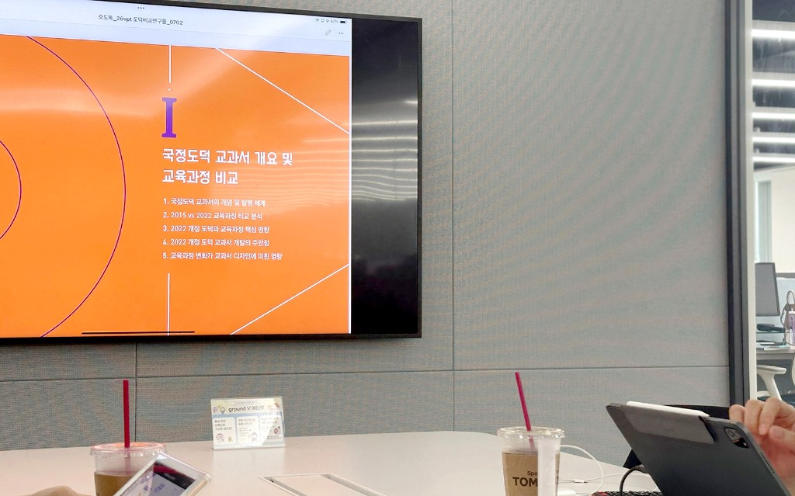
Q. 리더로서 준비하실 때 가장 어려웠던 점은 무엇이었나요?
최윤석 CP 비바코드 리딩은 저도 처음이라, 통 이끄는 역할이 생각보다 쉽지 않더라고요. 사전에 계획이 잘 서 있지 않으면 서로 오해도 생기고, 통에서 뭘 준비해야 할지 혼선이 있었어요. 12명이다 보니 L층엔 인원이 앉을 자리가 부족해서 매번 통실을 찾아다니는 것도 작은 고민거리였고요.
그럼에도 불구하고 디자인뿐만 아니라 개발 부서와 인문융합 Cell, 국정교과서 Cell까지 함께하고 있어 다양한 관점이 만나는 자리인 것 같아요. 또, 통을 진행하며 무엇보다 대면이 비대면보다 훨씬 효과적이라는 걸 느꼈어요. 특히 저희는 모형 교과서 샘플을 함께 보며 의견을 나눠야 하다 보니, 자유롭게 상호작용을 할 수 있는 협력적 구조가 중요하더라요.
3. 비바코드를 하며 좋았던 점은?
Q. 활동하시면서 ‘비바코드 하길 잘했다!’고 느끼신 순간이 있었을까요?
신예원 CP 네, 이번 비바코드는 저희 팀 업무와도 밀접한 주제이긴 한데요, 학습을 목적으로 모이다 보니 평소보다 훨씬 가벼운 마음으로 팀 간 교류가 가능했던 것 같아요. 딱딱한 회의가 아니라 함께 배우는 자리여서 오히려 업무와는 다른 환기되는 시간이었달까요?
최윤석 CP 저는 살짝 반대인 거 같아요! 비바코드 리더 역할을 하다 보니, 리딩 부담을 느낄 때도 있었고요. 프로젝트 주제 자체가 워낙 본업과 연결돼 있다 보니, 업무처럼 다가오기도 했던 게 사실입니다 (껄껄). 그래도 그 와중에 평소 교류가 많지 않았던 팀들과 함께 작업할 수 있었고, 서로 다른 시각에서 아이디어를 나누는 경험은 분명 의미 있는 시간이었어요.
4. 무엇을 배웠나요?
Q. 지금까지의 비바코드 활동을 통해 얻은 배움이나 변화가 있다면 말씀해 주세요! 혹시 실제 업무에 도움이 된 순간도 있으셨을까요?
최윤석 CP 이번 스터디는 특히 22 개정 도덕 교과서를 다시 들여다보며 이전 15 개정과 어떤 점이 달라졌는지 비교하고, 학생들의 학습 경험이 어떻게 더 나아졌는지를 확인하는 데 초점을 뒀어요. 이런 과정을 통해 다음 개정 교과서 개발 때는 어떻게 개선할 수 있을지에 대한 인사이트도 얻을 수 있었고요.
단순한 리뷰를 넘어, 실험적으로 다양한 아이디어를 시도해 볼 수 있었던 점이 정말 좋았습니다. 모형 교과서를 여러 권 제작하며 느꼈던 건, 교과서의 미래를 새로운 형식으로 제안할 수 있다는 가능성이었어요. 기존의 판형과 구조를 넘어, 학습자 입장에서 더 직관적이고 흥미로운 디자인을 시도하고 있고, 이런 창의적인 실험이 해외 디자인 어워드 수상으로도 이어졌었습니다.
신예원 CP 저도 공감해요. 저는 이번 국정 도덕 교과서 개발에는 직접 참여하지 않았었는데요, 이번 비바코드를 통해 단순히 예쁘게 디자인하는 걸 넘어, 내용 개선을 위한 깊은 고민이 있었다는 걸 알게 되었고, 덕분에 개발팀의 관점과 고민을 더 깊이 이해하게 됐어요. 단순히 결과물을 만드는 걸 넘어서, 서로의 노고를 인정하고 공유할 수 있었던 시간이었다고 생각합니다. :)
5. 우리 팀만의 차별점은?
Q. 오도독 팀만의 소통 방식이나 학습 분위기에서 다른 팀과 차별화되는 점이 있다면 어떤 게 있을까요?
신예원 CP 통 진행 후 꼭 ‘통록’을 자세히 정리해서 공유하고 있어요. 2주 간격으로 모이다 보니, 팀원도 10명이 넘고, 기억이 흐려질 수 있잖아요. 그래서 다음 모임 때 무엇을 개발하고 어떤 준비가 필요한지를 명확히 기록하고, 그 내용을 바탕으로 자연스럽게 팔로업이 이어질 수 있도록 했습니다. 특히 네이버 클로바노트와 ChatGPT를 적극 활용해서 정리와 자료 공유의 효율을 높였습니다. : )
최윤석 CP 한 가지 자랑하고 싶은 건, 비바코드를 2주에 한 번, 정말 성실하게 3회 이상 진행해 왔다는 점이에요. 업무와 병행하며 이 정도의 집중도와 지속성을 유지하기 쉽지 않은데, 그만큼 팀원 모두가 진심으로 참여하고 있다는 뜻이겠죠? (껄껄) 열심히 토의중인 오도독 팀 멤버들 : )
마지막 한마디
Q. 비바코드 활동을 마무리하며 느낀 점이나, 앞으로 참여할 분들에게 전하고 싶은 메시지가 있다면 부탁드립니다!
최윤석 CP 업무가 많고, 비바코드까지 병행하다 보니 아무래도 신경을 100% 쏟기 어려운 게 사실이에요. 하지만 그런 와중에도 우리가 목표한 것을 비바코드로 설정했고, 끝까지 잘 해내서 값진 결과물로 남았으면 하는 바람입니다. 업무 외의 시간을 내어 무언가를 ‘또’ 해낸다는 게 쉬운 일은 아니잖아요. 그래도 이왕 시작한 만큼, 마지막엔 웃으면서 마무리할 수 있었으면 좋겠다는 바람이에요. 내년에도 또 비바코드 하고 싶어요! 라는 말이 나올 수 있도록 하고 싶습니다. (껄껄)
신예원 CP 저도 비슷한 생각이에요. 이번 비바코드는 저희 부서에서 2년 넘게 개발해 온 국정 도덕 교과서를 가지고 진행하는 프로젝트예요. 그러다 보니 애초에 다루는 ‘원재료’ 자체가 귀합니다. 🙂 디자인팀이 손수 만든 결과물을 다시 함께 들여다보며 서로의 노고를 되새기는… 정말, 뜻깊은 비바코드로 마무리되었으면 합니다.
Q. 인터뷰 감사합니다, CP님들! 덕분에 오도독 팀의 따뜻하고 진정성 있는 학습 이야기를 들을 수 있었어요. 이 이야기가 다른 팀들에게도 좋은 자극이 되고, 비상 안에 배움의 문화가 더 단단히 자리 잡는 계기가 될 거라고 믿습니다. : )
📰 비바人터뷰 vol.2
"수를 풀며, 길을 만든다!"
디자인, 교육, 이야기가 만난 그곳—수풀길의 스터디 현장!
비바코드에서 또 하나의 흥미로운 시도를 이어가고 있는 팀이 있습니다. : ) 이름부터 재기발랄한 수풀길. 팀 이름만 들어도 무언가 특별한 수학 탐험이 시작될 것 같지 않나요? ☺️
수학이라는 다소 딱딱한 주제를 어떻게 하면 아이들에게 더 친근하게, 더 재미있게 전달할 수 있을까— 그 고민에서 출발한 수풀길 팀은 단순한 워크북을 넘어 ‘동화 속 수학여행’이라는 새로운 세계를 만들어냈습니다.
아이디어 통부터 원고 기획, 디자인, 영상 제작까지. 모든 과정에 직접 발을 담그며 만들어낸 이들의 창의적인 여정. 수풀길 팀의 비바코드 스토리, 지금 함께 만나보시죠!
디자인, 교육, 이야기가 만난 그곳—수풀길의 스터디 현장! : )
유지인 CP (수풀길 리더, 크리에이티브2 Cell)
정세연 CP (수풀길 PM, 크리에이티브2 Cell)
1. 수풀길 팀의 시작
Q. ‘수풀길’이라는 이름, 그리고 그 안에 담긴 방향성과 기획 의도가 궁금합니다. : )
지인 CP ‘수를 풀다’라는 의미에서 시작했어요. 동시에 ‘수를 탐험하는 길’이라는 뜻도 담고 있습니다. 기존 수학 모형 교과서를 만드는 게 목적이었는데, 어떻게 하면 딱딱한 수학이라는 과목이 좀 더 흥미로워질 수 있을까를 많이 고민했습니다.
세연 CP 대상이 초등 1, 2학년이다 보니, 단순한 풀이형 수학이 아니라 놀이 학습으로 다가가고 싶었어요. 그래서 전체를 하나의 동화처럼 구성했어요. 사실 요즘 검정교과서도 스토리텔링 도입은 많이 하지만, 대부분 도입부에서 끝나요. 저희는 한 권 전체가 스토리로 이어지는 구조를 시도했습니다. ☺️
Q. 수학 교과서를 동화처럼 구성한다니 정말 인상 깊습니다~! 이런 기획은 어떻게 시작하게 되셨나요?
세연 CP 처음에는 ‘모형 교과서를 만들라’라는 미션을 받았는데... 이미 모형으로 개발되었던 수학이라니, 부담되더라고요. ㅎㅎ 그래서 처음 통 진행할 때는 ‘그냥 워크북으로 가자’고 했었어요. 그런데 그걸 조금 더 확장하고 싶다는 생각이 들었고, 그렇게 동화 콘셉트가 나오게 됐어요. QR코드를 연결해서 활동이 이어질 수 있도록 구성하기도 했습니다.
2. 어떻게 운영되었나요?
Q. 스터디 준비는 언제부터 시작하셨고, 어떤 계기로, 본격적으로 진행하게 되셨나요?
지인 CP 첫 학습일지 쓰기 전부터 사실 준비는 하고 있었어요. 본격적으로 시작한 건 공지가 뜨고 나서였어요. 이왕 하는 거면 지원금도 받으면서 제대로보면 좋으니까요. ㅎㅎ
Q. 운영하면서 어떤 방식과 역할 분담에 중점을 두셨나요?
지인 CP 매 통 전에 오늘 뭘 할지, 어떤 업무를 해야 할지 미리 점검하고 세연 시피님이랑 함께 통에 들어갔어요. 기존에는 개발에서 원고를 정리해서 CC(크리에이티브디자인연구소)에 넘기면, CC에서 디자인을 진행하는 방식이었는데, 이번엔 그 역할 구도를 바꿔봤어요. 저희가 먼저 기획하고, 그 기획에 맞는 원고를 고른 뒤 디자인까지 했죠. 그걸 다시 개발팀이 역으로 검수해 주는 구조로요. 다행히 중간 결과물이 괜찮다는 평가를 받아서, 기분 좋았어요. 😀
세연 CP 저는 전체 운영을 맡았고, 프로젝트 리더의 역할을 하고 있습니다. CC에서는 비바코드를 매번 하다 보니, 늘 ‘이번엔 뭐가 달라야 하지?’라는 부담이 있어요. 연구물도 계속 새로움을 추구하는데, 거기서 또 차별화된 뭔가를 만들어내야 하니까요. 그래서 이번엔 동화 형식으로 제안했지만... 쉽지는 않았어요. 대상 아동이 초등 1~2학년이라 학습 배경이 거의 없거든요. 개발팀도 처음엔 막막해했어요. 이런 형태로 수업이 흘러간 전례가 없어서, 원고를 어떻게 줘야 할지도 모르겠고. 그래서 디자이너들이랑 수없이 검토 통을 했죠. 이번엔 진짜 역대급으로 개발 셀과 소통 많이 했어요. 그 덕분에 디자인이랑 원고 기획까지 CC에서 이례적으로 주관하게 됐고, 영상까지 연계하게 됐어요. 저희 입장에서는 정말 뿌듯한 프로젝트였어요. : )
수풀길 팀의 스터디는 계속됩니다!
3. 비바코드를 하며 좋았던 점은?
Q. 말씀을 들으니, 이번 프로젝트가 팀에게도 조직에도 정말 의미 있는 경험이었겠다는 생각이 들어요. 그런 가운데 "아, 이래서 비바코드를 하는구나!" 싶은 순간도 있으셨을까요?
지인 CP 환경적인 지원이 정말 좋았어요. 책도 구매해서 참고할 수 있었고, AI 프로그램 구독료나 툴 같은 것도 무엇보다 기존에 없던 프로세스를 저희 손으로 새롭게 시작해본 게 큰 경험이었어요. 틀을 깨고, 디자이너가 주도적으로 기획부터 운영까지 해볼 수 있었던 것, 그게 정말 뿌듯했죠. 그리고… 학점 지급도 아주 큰 동기부여였습니다.
세연 CP 저도 지인 시피님이 말씀하신 거랑 정말 공감해요. ㅎㅎ 우리가 교육회사다 보니, 실무 디자이너로서 할 수 있는 일에 어느 정도 한계가 있었거든요. 특히 교과서는 교육과정에 맞춘 원고가 우선이다 보니, 디자인에서 창의성을 크게 발휘하기 어려운 부분도 있었고요. 근데 이번 비바코드는 좀 달랐어요. 개발이 중심이 아닌, CC에서 기획의 방향을 먼저 제안하고 그걸 기반으로 디자인을 풀어나갈 수 있었던 경험 자체가 새로웠고, 그게 너무 좋았어요. 또 다른 CC 팀들이 만든 결과물들을 보면서도 진심으로 감탄했어요. ‘우리 모두 다 같이 성장하고 있구나…’ 느껴졌어요.
4. 무엇을 배웠나요?
Q. 서로 다른 역할과 시선에서 하나의 결과물을 만들어냈다는 점이 정말 인상 깊네요. 이번 활동을 통해 팀이나 개인에게 어떤 변화가 있었는지도 궁금해요!
지인 CP 셀을 운영하는 입장에서 팀원들을 지켜보면, 정규 업무를 할 때와 이번 모형 교과서를 개발할 때 모습이 조금 달랐던 것 같아요. 더 능동적으로 의견을 내고, 무엇보다 즐겁게 일하는 느낌이랄까요. 자율적인 분위기 속에서 각자 가진 아이디어를 자연스럽게 나누고, 서로 존중하며 몰입하는 모습이 참 보기 좋았어요. 조직문화가 수평적인 덕분에 가능했던 흐름이라고 생각해요.
세연 CP 맞아요. 이번이 특히 더 그랬던 것 같아요. 크리에이티브한 아이디어를 계속 내야 하는 프로젝트이다 보니 편하게 대화 나누면서 아이디어가 통통 튀어나왔던 순간들이 많았어요. 특히 저연차 CP님들이 가진 신선하고 유쾌한 발상들이 정말 자극이 많이 되더라고요. 기존의 틀에서 벗어나 다양한 업무를 경험할 수 있었던 것도 큰 변화였고요.
지인 CP 물론 약간의 부담감도 있었어요. 이번에는 저희가 주도적으로 전체를 설계하고 기획한 구조이다 보니, 함께 협업해 주신 개발 시피님들께 다소 부담이 갔을 수도 있을 것 같아요.
세연 CP 실제로 개발 시피님들이 정말 고생 많으셨어요. 디자이너가 원고 기획을 하는 구조는 익숙하지 않다 보니, 교육적으로 이 흐름이 맞는지에 대해 계속 피드백을 주셨어요. 그래도 그런 대화 덕분에 더 많이 배울 수 있었던 것 같아요.
지인 CP 맞아요. 개발자 분들께서 정말 꼼꼼하게 피드백 주셨어요. 저희가 미처 생각하지 못한 부분들을 정확하게 짚어주셔서 그게 또 하나의 배움이 되었습니다. :) 그리고 수풀길 팀의 컨셉에 맞게 미디어 자료도 연계해서 만들었는데, 서책과 미디어의 톤앤매너를 통일하는 작업도 잘 이뤄졌던 것 같아요. 각자의 역할 안에서 정말 열심히 함께 해준 팀워크가 기억에 남습니다.
5. 아쉬운 점
Q. 앞서 말씀해 주신 다양한 성과들이 더 빛나는 이유는, 그만큼 많은 고민과 시도가 있었기 때문이겠죠. 그렇다면 활동하면서 조금 아쉬웠던 점도 있으셨을까요?
세연 CP 원래는 연말까지 넉넉하게 진행할 수 있어서 기획도 차근차근 하고 실험도 더 해 보려 했는데, 올해는 국정 교과서 작업과 일정이 겹치면서 비바코드 프로젝트도 예상보다 조금 빠듯하게 진행되었어요. 심사 일정도 있다 보니 준비 과정을 서둘러야 했던 점이 살짝 아쉬웠어요.
지인 CP 작업을 하다 보니 아이디어가 하나둘 더 생기고, “이것도 해 보면 좋겠다!” 싶은 게 많아졌는데 시간 제약 때문에 다 시도해보지 못했던 점이 조금 아쉬워요. 조금만 더 시간이 있었으면 더 다채롭게 펼쳐볼 수 있었을 텐데요.
6. 수풀길 팀만의 특별한 점
Q. 팀원 모두가 몰입하며 만들어낸 결과물이라 더욱 특별하게 느껴지는데요, 수풀길 팀만의 분위기나 협업 방식은 무엇이었을까요?
세연 CP 이번에는 처음부터 디자이너가 동화 콘셉트를 제안하고, 그 흐름에 맞춰 원고까지 직접 기획해 본, 새로운 방식이었어요. 기존에는 개발팀에서 제공한 원고를 바탕으로 디자인을 했다면, 이번에는 완전히 역으로! 디자이너가 스토리를 먼저 만들고 그에 맞춰 전체를 설계했죠. 자유롭게 의견을 나눌 수 있는 분위기 덕분에 진짜 해보고 싶은 걸 마음껏 시도해 볼 수 있었어요. “이거… 될까?” 싶은 것도, 비바코드에서는 “일단 해보자!”로 바뀌니까요. 원고 기획만 두 달 넘게 매주 만나며 준비했고, 그 이후에는 시안을 다듬기 위해 2주에 한 번씩 계속 만났어요. 이런 과정이 수풀길 팀만의 독특한 협업 흐름이었던 것 같아요.
지인 CP 그리고 팀원 각자가 가져온 아이디어를 모아 정리하는 과정도 인상 깊었어요. 시장조사도 함께 나갔고, 각자가 생각하는 이상적인 교과서 레퍼런스를 가져왔는데 놀랍게도 공통적인 키워드가 많더라고요. 마음이 잘 맞는 팀이라는 걸 그때 또 느꼈어요. 또 세연 시피님이 큰 그림을 잘 그려주시고, 팀원들의 역할 분담도 적재적소에 잘 맞춰주셔서 프로젝트가 더 빠르고 유연하게 진행될 수 있었던 것 같아요. 덕분에 다른 셀들보다 빠른 시너지를 낼 수 있었고요.
마지막 한마디
Q. 어느덧 마지막 단계네요~ 비바코드 여정을 함께해온 팀원들에게 전하고 싶은 따뜻한 한마디가 있다면요?
지인 CP 사실… 우승 상금이 있는지도 몰랐는데요...갑자기 큰 욕심이 생기네요! 바쁜 업무 속에서도 이 프로젝트를 이어올 수 있었던 건 팀원들이 열정적으로 함께해줬기 때문이에요. 저는 그저 격려하고 옆에서 힘을 실어주는 역할만 했을 뿐이에요. 마지막 최종 결과물 제출만 남았는데, “우승을 향해! 아자아자 화이팅!”입니다! 💪🏻
세연 CP 팀원 모두가 비바코드 처음 참여하는 분들이었어요. 리더로서 우승을 원하신다면…저도 끝까지 최선을 다하겠습니다 하하하 : ) 함께 해줘서 정말 고맙고, 덕분에 많이 배웠어요. ⭐
📰 비바人터뷰 vol.3
"가내수공업? 아니죠, 우리는 사내뮤공업!"
음악 전공자 6인의 디지털 콘텐츠 수작업 현장
이번 비바人터뷰의 주인공은 바로! 음악으로 똘똘 뭉친 사내뮤공업 팀입니다!
리코더 들고 직접 연주해 촬영하고, AI 목소리 입히고, 샘플 만들고 리뷰하고… 완전한 셀프 제작으로 교과서 콘텐츠의 새 지평을 여는 이 팀, 이쯤 되면 그냥 프로 콘텐츠 장인 아닌가요?
“이건 거의… 가내수공업 아냐?” 싶지만, ‘사내에서 만드는 음악 콘텐츠’니까 사내뮤공업, 이름부터 박수 짝짝! “편집이요? 해본 적은 없지만 해보겠습니다!” ☺️
그 어떤 곡보다 조화로운 협업의 하모니, 사내뮤공업 팀의 리듬 가득한 비바코드 이야기를 지금 들어보세요!
최다솜 CP (사내뮤공업 리더, 통합실용2 Cell) — “안녕하세요, 다방면에 관심이 많은 취미 부자 최다솜입니다!” 🥳
다솜 CP 비바샘에 올릴 콘텐츠를 기획부터 촬영, 편집, 결과물까지 전부 직접 만들다 보니, 문득 이런 생각이 들었어요. “이건 가내수공업인데… 우리가 사내에 있으니까 사.내.수.공.업?” 게다가 콘텐츠 주제가 음악이었고, 저희가 음악 전공자들로 구성된 음악교과서 Cell이다 보니, 자연스럽게 ‘사내뮤공업’이라는 팀명이 탄생했습니다.
Q. 사내뮤공업은 어떻게 시작하게 되었나요?
현진 CP 사실 영상 제작은 취미로도 한 적이 없던 멤버들이 대부분이에요. 그래서 이번엔 ‘우리 음악 콘텐츠를 직접 한 번 만들어보자!’는 마음으로 도전했어요. 협업도 물론 중요하지만, 이번만큼은 Cell 안에서 시작부터 끝까지 주도적으로 해보자는 의지도 있었고요.
다솜 CP 또 하나 중요한 이유는... 편집 프로그램 구독료를 지원받을 수 있어서요. ㅎㅎㅎ
2. 음악 전공자 6인의 협업, 어떤 모습이었을까요?
Q. 통합실용2 Cell은 시피님들 모두 성향도 다양하고 개성도 뚜렷할 것 같은데요! 실제로 협업할 땐 어떤 팀 분위기가 느껴졌는지, 서로 어떤 시너지를 내셨는지도 궁금해요.
다솜 CP 저희는 6월부터 본격적으로 매주 만나며 스터디를 진행했어요. 사실 5월부터 비바코드 해보자는 이야기가 오가긴 했는데, 초반에는 방향을 잡는 시간이었고요. Cell 자체가 거의 같은 팀이다 보니, 자연스럽게 매주 꾸준히 모이며 협업할 수 있었어요.
저희는 음악 교과서 개발과 비바샘 콘텐츠 개발을 함께하고 있었는데요, 특히 비상 음악교과서가 올해 초중고 모두 채택률이 상승하면서 디지털 교수자료에 대한 유입도 많아졌어요. 교사분들이 요구하시는 자료도 많아졌고요. 교과서 하나만 믿고 비상을 선택해준 경우도 많기에, 콘텐츠의 질을 높이기 위한 고민이 많았어요. 디지털 업무 전체를 저희 Cell이 처음으로 이관받기도 했고, 그래서 타사 분석부터, 콘텐츠 퀄리티까지 신경 써서 비바코드 활동을 더 적극적으로 하고 싶었어요.
현진 CP 맞아요. 말씀드린 것처럼 저희 Cell 모두가 음악 전공자입니다. 작곡, 이론, 연주 전공까지 다양하게 모여 있고, 국악과 서양음악 전공자도 함께 있거든요. 다들 음악은 물론이고 업무적으로도 일잘러라서 팀워크가 참 좋아요. 또 통합실용 Core 자체가 예체능 전공자들이 많아서 그런지, 의견도 자유롭고 분위기가 굉장히 수평적이에요. 서로 전공 얘기를 할 때마다 재미도 있고, 아이디어가 막 튀어나오니까 진짜 창의적인 분위기예요.
3. 비바코드를 하며 좋았던 점은?
Q. 활동하면서 ‘비바코드 하길 정말 잘했다!’ 싶은 순간이 있었을까요? 직접적인 업무에 어떤 도움이 되었는지, 또는 새롭게 배운 것이 있다면 소개해 주세요!
다솜 CP 사실 이 프로젝트, 비바코드 아니었으면 시작조차 못 했을 거예요. 업무에 꼭 필요한 결과물이었지만, 막상 저희끼리보려면 엄두가 안 났을 것 같거든요. 그런데 비바코드 덕분에 다양한 지원도 받을 수 있었고, 도전할 수 있는 용기도 생겼어요.
처음엔 모르는 것도 많아서 미디어콘텐츠 Core 시피님들께 직접 자문도 구하고, 효과음이나 성우 음원도 찾아 쓰고, 영상 편집 기술도 공부하면서 하나하나 시도해 봤어요. 샘플 만들어와서 같이 리뷰하면서 퀄리티를 점점 높였죠. 그러다 보니 “오오… 우리 이 정도까지 해냈어?” 싶을 정도로, 꽤 발전되어 가는 것이 눈에 보이더라구요!
현진 CP 맞아요. 정말 배우면서 해낸 프로젝트였어요. 조금씩 하다 보니 “아, 이건 이렇게 고치면 더 좋아지겠다” 싶은 게 생기고, 그걸 적용하면서 점점 결과물이 발전해가는 게 눈에 보여서… 그게 정말 뿌듯했어요.
Q. 혹시 AI 도구도 활용해 보셨나요?
다솜 CP 완전요! 영상 편집 전 단계에서는 ‘미리캔버스’를 많이 썼어요. 디자인도 거의 다 이걸로 잡았고, AI 기능이 은근히 많아서 활용도가 높았어요.
현진 CP 그리고 성우 목소리도 AI 성우를 사용했어요. 덕분에 퀄리티도 높이고, 시간도 절약할 수 있었습니다. : )
4. 직접 콘텐츠를 만들면서 느낀 변화가 있다면요?
Q. 사내뮤공업팀은 콘텐츠를 직접 제작해 보고 계시잖아요! 그 과정에서 ‘아, 이게 진짜 콘텐츠 만드는 거구나…!’ 하며 느낀 변화나 배움이 있었을까요?
현진 CP 저는 개인적으로 동료들과 더 돈독해졌다는 점이 가장 커요. Cell 여섯 명 모두 음악 전공자지만, 세부 업무는 조금씩 다르거든요. 그런데 이번 활동을 계기로 한 팀으로 하나의 결과물을 만들고, 함께 피드백을 주고받으며 협업하는 시간이 많아졌어요. 같은 Cell 안에서도 이렇게 긴밀하게 같이 해본 적은 흔치 않았는데, 그게 참 좋았어요.
다솜 CP 예전에는 저희가 '출판 컴퍼니'였어요. 말 그대로 서책 중심이었죠. 그런데 작년에 ‘콘텐츠 컴퍼니’로 이름이 바뀌면서, 단순히 책을 넘어서 디지털 콘텐츠까지 제작하는 쪽으로 업무의 범위가 넓어졌어요. 사실 처음엔 ‘콘텐츠 제작도 우리가 해야 한다’는 말이 막연하고 어렵게 느껴졌는데, 이번 활동을 직접보면서 실감했어요.
"아, 나도 비로소 콘텐츠 제작자구나!"라는 것이 실감 나더라고요. 영상 편집 툴(캡컷) 같은 것도 전혀 몰랐는데, 이번에 하나하나 배워가며 작업하면서 정말 몰입도 높고 생산적인 시간이었어요. 예전에는 업무가 ‘교과서 담당’과 ‘미디어 콘텐츠 담당’이 나뉘어 있었다면, 지금은 두 영역을 동시에 다룰 수 있게 된 거죠. 스스로에게 성장했다는 확신이 드는 순간이었어요.♥️
5. 사내뮤공업 팀만의 특별한 점
Q. 팀마다 협업 방식이 다 다르잖아요. 사내뮤공업만의 특별한 학습 분위기나 작업 방식이 있다면 소개해 주세요!
다솜 CP 초반에는 각자 잘할 수 있는 영역을 나눠서 맡았죠. 예를 들면 악보 제작은 누구, 영상 편집은 누구 이런 식으로요. 그런데 시간이 지나면서 점점 한 명 한 명이 멀티 플레이어가 되어가는 방식으로 바뀌었어요. 이제는 다 같이 편집 툴도 익히고, 촬영도 해보고, 콘텐츠에 대한 의견도 자연스럽게 나누게 되더라고요. 결과물을 잘 만드는 것도 중요하지만, 각자의 스킬이 확장되는 과정이 정말 의미 있었어요.
현진 CP 저희가 만드는 영상 중에는 직접 악기를 연주하는 장면도 있어요. 리코더 연주 영상이 콘텐츠에 있는데, 단순히 배경음악을 넣는 게 아니라 저희가 직접 연주하는 모습을 촬영했습니다. 하하하
진짜 교사들이 수업에서 활용할 수 있는 실용적인 자료를 만들고 있다는 점에서 뿌듯함이 커요.♥️
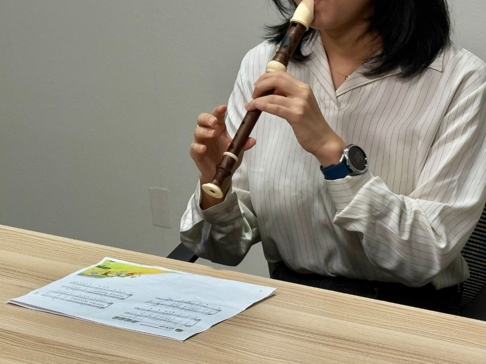
직접 연주해 촬영한 리코더 영상 — 가내수공업이 아닌, 진심을 담은 콘텐츠 제작
다솜 CP 이 콘텐츠는 비바샘에도 정식으로 올라갈 예정이에요! 11월 말까지 샘플을 제출하고, 내년 1월에 최종 결과물을 완성하여 비바샘에 탑재하는 게 목표입니다. : )
마지막 한마디
Q. 어느덧 마지막 단계네요~ 비바코드 여정을 함께해온 팀원들에게 전하고 싶은 따뜻한 한마디가 있다면요?
다솜 CP 비상이 제 첫 직장이라 다른 회사는 잘 모르지만, 비상이 직원 교육에 진심인 회사라는 건 정말 확실히 느껴요. 비바코드 같은 것도 ‘꼭 지원해 보라’며 계속 기회를 주고, 이런 시스템이 있다는 것 자체가 정말 감사한 일이에요. 3년 동안 교과서 개발 시즌이 겹쳐 정신없이 바쁘기만 했는데, 이번에 오랜만에 공식적인 지원을 받으면서 활동할 수 있어서 정말 기뻤고, ‘이래서 비바코드를 하는 거구나’ 싶은 순간들이 많았어요.
업무가 조금 덜 몰릴 시기에는, 더 많은 시피님들이 이런 기회를 적극 활용했으면 좋겠어요. 진짜,보면 생각보다 훨씬 얻는 게 많아요. 저희처럼요. : )
현진 CP 비바코드를 하면서 저는 정말 많은 걸 배우고 있어요. 혼자였다면 시도조차 못 했을 영상 편집이나 콘텐츠 제작도, 팀원들과 함께니까 도전할 수 있었고, 조금씩 해내고 있다는 게 느껴져서 뿌듯합니다. 사실 저는 사진 한 장 찍는 것도 낯설어하는 편인데, 이제는 "우리 Cell이 직접 만든 결과물이 시각적으로 구현될 수 있구나!" 하는 감동도 느껴요. 무엇보다도 함께하는 Cell 시피님들이 있어서 가능했던 일들이라, 정말 고맙다는 말 전하고 싶어요 ♥️
📰 비바人터뷰 vol.4
🏆 "연속 3년, 혁신을 탭하다!" 기출탭탭 Cell의 이야기
2025 AES KOREA Awards Product Innovation — Best Innovation Prize
올해도 기출탭탭이 해냈습니다! 👏🏻👏🏻👏🏻
고등 전 과목, 내신∙수능 올인원 학습 서비스 기출탭탭이 또 한 번 빛나는 성과를 거뒀습니다.
2023년 구글플레이 ‘올해를 빛낸 대화면 앱’ 우수상, 2024년 이러닝∙에듀테크 비즈니스모델 공모전 최우수상, 그리고 2025년 AES KOREA Awards 최고 혁신상까지! 무려 3년 연속 굵직한 상을 휩쓴 기출탭탭. 이제는 단순한 학습 앱을 넘어, 비상의 대표 혁신 아이콘으로 자리매김하고 있습니다.
하지만 이 빛나는 성과 뒤에는 기출탭탭 운영진 5명의 깊은 고민과 꾸준한 노력이 있었다고 해요. 뿐만 아니라 사내 여러 전문 부서와의 조화로운 협업이 더해졌다는 사실!
오늘 비바人터뷰에서는, 기출탭탭을 직접 기획하고 성장시켜 온 기출탭탭 Cell의 CP님들을 만나, 수상까지의 여정과 그 속에 담긴 팀워크 이야기를 들어봅니다.♥️
박희순 CP (기출탭탭 Cell) — 5명으로 구성된 기출탭탭 Cell이지만 사업, 서비스, 마케팅, 콘텐츠를 모두 진행하는 조직이다 보니 전반적인 기출탭탭을 담당하고 있다고 해야 하려나요. ^^
허은실 CP (기출탭탭 Cell) — 각 교과 콘텐츠의 기획 및 운영을 총괄하고 있습니다. 전공인 국어 과목뿐 아니라 전 과목 콘텐츠를 관리하며 새로운 분야를 배우는 즐거움과 시야 확장의 보람을 느끼고 있습니다.
김나래 CP (기출탭탭 Cell) — 마케팅을 맡고 있습니다. 고등학생에게 기출탭탭이 더 널리 알려지고, ‘고등 필수 앱’으로 자리 잡을 수 있도록 고민하고 있습니다. : )
📱 기출탭탭, 어떻게 시작됐을까?
Q. 먼저 축하드립니다! ‘기출탭탭’이 최고 혁신상을 받았다는 소식에 다들 박수를 보냈는데요! 그런데 사실, “기출탭탭? 그게 뭘까?” 하시는 분들도 많더라고요. 비상 동료들에게 한 줄로 딱! 소개해 주신다면요?
희순 CP 시간은 없는데 공부해야 할 건 산더미 같은 고등학생들에게 꼭 필요한 앱이에요. 고등 전 과목을 아우르면서 내신과 수능을 동시에 준비할 수 있는, 말 그대로 올인원 학습 서비스죠.
Q. 이름도 귀에 착 붙어요! ‘기출탭탭’이라는 이름, 어떻게 탄생했나요?
나래 CP 교재마케팅 Cell 소속으로 있을 때, CP님들과 함께 고민하고 논의하여 브랜드 네이밍 아이데이션과 기획을 진행했어요. 태블릿PC에 기출문제를 학습할 수 있다는 점을 직관적으로 표현하기 위해 고민했고 학습 행위가 연상되면 좋겠다는 관점에서 '기출탭탭'이라는 네이밍이 탄생되었어요. 태블릿PC(탭)에서 화면을 '탭'하여 맞춤형 문제를 풀 수 있다는 의미를 가진답니다. 발음도 쉽고 리듬감 있게 들려 브랜드 네이밍으로 최종 선정됐어요.
은실 CP 콘텐츠 컴퍼니에서는 2020년부터 출판의 디지털화를 고민하고 있었고, 학생들이 태블릿PC를 활용해서 학습하는 행태를 확인한 후 2021년도에 본격적으로 기출탭탭에 대한 기획이 시작되었습니다. 학교 현장에서 디지털기기를 공급하여 학습하는 환경이 조성되었고 태블릿 PC 학습이 유리한 고등학생을 대상으로 한 콘텐츠를 담아 서비스하는 것이 좋겠다는 판단에 기획한 것이 기출탭탭입니다. : )
🏆 AES KOREA Awards, 무슨 상이길래?
Q. 이번에 수상한 AES KOREA Awards가 어떤 상인지 잘 모르는 분들도 많으실 것 같아요. 간단히 소개해주신다면요?
나래 CP AES KOREA Awards는 아시아 교육·기술 분야에서 혁신적인 서비스와 제품을 발굴해 시상하는 어워드예요. 저희 기출탭탭이 AI 맞춤 학습 기능과 e-Book 기반의 맞춤 학습 제공이라는 부분을 높이 평가받아서 이번 상을 받을 수 있었어요.
희순 CP 참여한 대상은 국내 서비스가 많았는데, 저희가 지원한 분야는 글로벌 카테고리였어요. 사실 글로벌 서비스가 아니라 큰 기대는 안 했거든요. 그런데 심사위원단에서 “서비스가 굉장히 혁신적이고 실제 사용자 경험이 탁월하다”라는 피드백을 주셔서, 오히려 더 의미 있었어요.
은실 CP 사실 기출탭탭은 상복이 조금 있어요. 매년 꾸준히 좋은 성과를 거두고 있거든요.
희순 CP 맞아요. 아실지 모르겠지만, 일부 브랜드들은 특정 비용을 지불하고 상을 받는 경우도 있거든요. 그런데 저희가 받은 상들은 그런 게 전혀 없어요. 직접 출품해서, PT도 하고, 실제 심사를 거쳐 받은 결과라서 더 자부심이 큽니다. 작년에도 최우수상을 받았고요. 저희가 사내 공지를 올리는 이유도, “우리 이런 서비스 만들고 있어요”라는 걸 알리고 싶어서예요. 아직은 완자나 오투처럼 이름만 들어도 아는 대표 서비스는 아니지만, 기출탭탭 역시 회사를 대표할 수 있는 서비스로 성장하고 싶습니다.
✨ 혁신의 비결, 우리만의 강점은?
Q. 쟁쟁한 후보들 속에서 ‘최고 혁신상’을 거머쥘 수 있었던 비결! Cell에서 보기에 가장 큰 강점은 뭐였을까요?
희순 CP 무엇보다 저희 서비스가 전 과목을 다 담고 있다는 점이 큰 강점이었어요. 사실 많은 에듀테크 앱들이 수학 과목에 집중되어 있고, 탐구 과목(사탐·과탐)을 아예 지원하지 않는 경우도 많거든요. 그런데 기출탭탭은 이 태블릿 하나만 있으면 모든 과목 학습이 가능합니다. 이 편의성 덕분에 학교에서도 저희 서비스를 굉장히 선호하세요. 실제로 학생들이 사용하는 데이터를 보면, 중간·기말고사 시즌에 사탐·과탐 과목 활용률이 특히 높아요. “정말 필요할 때 딱 쓰인다”라는 점이 사용자들에게도 크게 어필된 것 같아요.
나래 CP 저는 타이밍도 아주 잘 맞았다고 생각해요. 교육 현장이 점점 서책 중심에서 벗어나 디지털 학습으로 전환되는 흐름이 있었고, 그 시점에 기출탭탭이 출시됐거든요. 게다가 AI 맞춤형 개인 학습 기능까지 더해져서 시대적 요구와 딱 맞아떨어졌죠. 2019년부터 준비를 시작해, 서비스화와 고도화를 거쳐 지금의 완성도 있는 모습으로 보여드릴 수 있었던 게 수상의 비결이 아닐까 싶습니다. 단순히 기술이 아니라 공교육적 가치로도 인정받은 것 같아 더 의미 있었어요.
은실 CP 네, 맞아요. 사실 이 서비스의 뿌리는 리더진의 선제적 구상에 있어요. 채진희, 구세나 CP님을 비롯한 컴퍼니 리더분들이 TFT를 꾸려 “정부가 곧 AI-DT를 도입할 거다, 우리도 그 전에 어떻게 디지털화할지 미리 준비해야 한다.”는 큰 그림을 그리고, 기출탭탭을 기획하셨어요. 그 토대 위에서 기출탭탭 개발이 이루어졌고, 현재는 저희가 서비스를 운영하고 있습니다. 시의 적절한 기획과 개발, 서비스 운영의 삼 박자가 잘 맞아 지금과 같은 성과를 이룰 수 있었던 것 같아요.
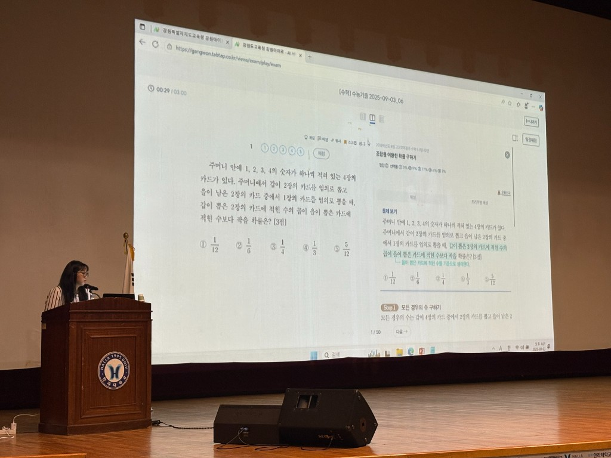
기출탭탭 강원아이로 서비스 설명회 현장!
🎊 첫 수상 순간, 그때의 우리!
Q. 처음 상을 받았을 때 팀 분위기는 어땠나요? 기억에 남는 순간도 궁금해요!
은실 CP 정말 어안이 벙벙했어요. 가장 처음 수상했던 게 2023년 구글플레이 ‘올해를 빛낸 앱’ 대화면 앱 부문 우수상이었는데요, 런칭한 지 1년도 안 된 상태였고, 솔직히 그때는 성과도 크게 없어서 매일 숨 가쁘게 달리고 있던 시기였거든요. 그런 상황에서 갑자기 큰 상을 받아서 너무 놀랐던 기억이 납니다.
희순 CP 맞아요. 저희도 처음엔 “이게 진짜인가?” 싶었죠. 😂 스팸이나 피싱 메일인가 하고 광고 대행사에 이 상이 실제 존재하는지까지 물어봤어요. 그런데 진짜 수상 소식이 맞다는 걸 확인했을 때 다들 믿기지 않아 했던 기억이 생생해요. 같은 부문에서 캔바(Canva)도 함께 소개되었을 정도로 쟁쟁한 서비스들과 나란히 이름을 올렸다는 게 아직도 자랑스럽습니다.
🚀 기출탭탭만의 차별화 포인트
Q. “이건 꼭 우리 서비스만의 차별화 포인트다!” 자랑하고 싶은 기능이 있다면요?
희순 CP 저희 Cell은 다섯 명이 전부예요. 저를 포함해 서비스 기획 3명, 은실 CP가 콘텐츠 담당, 나래 CP가 마케팅을 맡고 있고, 개발은 외주 협업으로 진행합니다. 그런데 이 작은 Cell이 가진 가장 큰 강점은 저희 서비스 자체가 교재 기반이라는 점이에요. 그리고 교재를 직접 만든 CP님들이 회사 안에 계시기 때문에, 저희가 도움이 필요할 때 바로 협업을 요청할 수 있습니다.
은실 CP 학생들이 수능 기출 문제나 eBook으로 탑재된 교재의 내용에 대한 문의를 남기면 최대한 빠르고 정확하게 답변을 전달하려고 노력하고 있어요. 챗GPT나 EBS 강의를 참고할 때도 있고, 전문적인 교과 지식이 필요할 때는 교재 담당자 CP님들께 확인도 요청 드리고 있습니다. 잘못된 부분이 있으면 바로 수정해서 내용을 업데이트하기도 하고요. 사용자의 가려운 부분을 바로바로 긁어 줄 수 있는 실시간 서비스라는 것이 서책과 다른 앱 서비스의 차별화 포인트가 아닐까 싶어요~!
희순 CP 적은 인원으로 운영하고 있다 보니 저희끼리 사내 벤처 같다는 말을 농담처럼 하고는 해요. 그러나 기출탭탭이 이렇게 성장하기까지는 콘텐츠 컴퍼니의 채진희 CP님, 구세나 CP님의 도움이 컸어요. 두 CP님께서 기출탭탭이 잘 클 수 있도록 물도 주시고, 영양분도 주시면서 이끌어 주셨어요. 덕분에 기출탭탭이 무럭무럭 성장할 수 있었다고 생각해요!
나래 CP 저는 마케팅 광고를 담당하고 있는데, 정말 한 명 한 명이 다 소중해요. 매년 서비스가 고도화되면서 마치 허물을 벗듯이 성장해온 걸 직접 체감했습니다.
💡 위기 속에서 배운 것들
Q. 개발 과정에서 가장 힘들었던 순간, 혹은 위기라고 느낀 순간이 있었을까요? 그리고 어떻게 극복하셨는지도 궁금합니다!
희순 CP 혁신이라는 게 늘 위기와 함께 오는 것 같아요. 꼼꼼히 준비해도 예상치 못한 개발 오류가 터질 때가 있거든요. 그럴 때마다 Cell 안에서 머리를 맞대고 “어떤 선택을 해야 할까?” 고민하면서 하나씩 해결해 왔습니다. 딱히 ‘이건 진짜 큰 위기였다!’ 싶을 정도는 없었지만, 작은 위기들이 연속적으로 있었고 그걸 매번 극복해온 게 지금까지 이어올 수 있었던 힘이라고 생각해요.
나래 CP 저는 실시간으로 사용자 반응을 지켜보는 게 늘 긴장되면서도 도전이었어요. 서책은 시간이 지나야 반응이 오잖아요. 그런데 앱 서비스는 오류나 장애가 생기면 바로 피드백이 들어옵니다. 즉각 대응해야 한다는 게 부담스러우면서도, 동시에 되게 신기했어요. “아, 이게 디지털 서비스구나” 실감했던 순간이었죠.
희순 CP 맞아요. 사용자들이 남기는 피드백 채널도 다양해요. 고객센터, 서비스 내 오류 접수, 심지어 지식인이나 구글플레이 리뷰에도 올라옵니다. 그만큼 학생들이 답답한 거잖아요. 사실 불만을 남기는 것도 충분히 이해돼요. 저희도 그런 목소리를 귀하게 받아들여서 개선하려고 노력합니다.
🤝 협업의 힘, 팀워크가 만든 성과
Q. 반대로, 팀워크가 가장 빛났던 순간은 언제였을까요?
은실 CP 서비스가 기획되고 실제 개발물이 나오기까지, 저희는 검수 과정에서 정말 통을 자주 했어요. 각자 전공과 담당 업무가 달라서 관점이 다를 수밖에 없는데, 그게 오히려 시너지가 됐어요. 기획 단계부터 “내 관점에선 이렇게 보여요”라고 나누다 보면 더 균형 잡힌 결과가 나오더라고요.
희순 CP 맞아요. 기획자 입장, 마케터 입장, 사용자 입장을 동시에 보려고 노력했어요. 저희가 고등학생은 아니지만 ㅎㅎ “학생이라면 어떻게 느낄까?”를 계속 고민했죠. 서비스 담당자 시선만으로는 한계가 있거든요. 그런 다각도의 시선이 모여서 더 나은 결과를 만들었다고 생각해요.
나래 CP 저는 예스24 단독 프로모션으로 진행한 '예스24 고등 교재 구매자 대상 기출탭탭 이북 이용권 증정 이벤트'가 기억에 남아요. 짧은 기간 안에 프로모션을 오픈해야 했는데, 보통은 Cell/Core간 협업으로 시간이 오래 걸릴 일들을 저희는 Cell 안에서 빠르게 해냈어요. 서비스, 콘텐츠, 마케팅이 한 팀으로 움직이니까 속도가 확 달랐죠. “이래서 팀워크가 중요하구나” 싶었던 순간이었습니다.
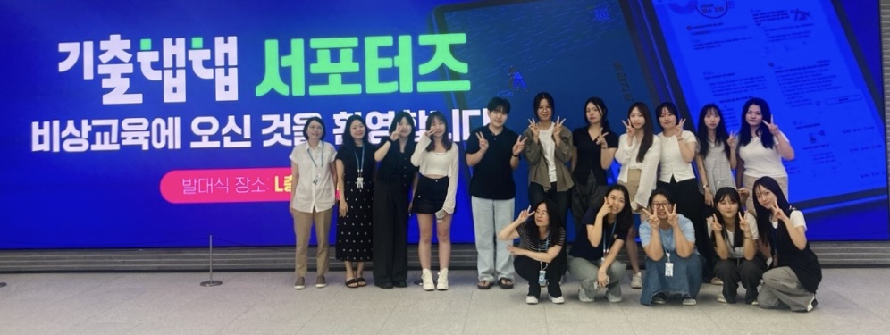
기출탭탭 대학생 서포터즈 발대식 현장!
💌 앞으로 전하고 싶은 말
Q. 마지막으로 전하고 싶은 메시지가 있다면요? 🥳
희순 CP 핵심 운영은 저희 다섯 명 이지만, 사실 사내의 수많은 CP님들과 협업하며 이 서비스를 키워가고 있어요. 특히 마케팅은 나래 CP 혼자 진행하는 부분이 많았고, AI 기능을 붙이면서는 연구소와도 긴밀히 협력했죠. 기출탭탭은 작은 조직에서 시작된 작은 서비스지만, 매년 새로운 기능을 더해 성장할 수 있었던 건 다양한 Cell/Core 덕분이었습니다. 앞으로도 어떤 조직과 협업하게 될지 모르지만, 많은 분이 기출탭탭을 열린 마음으로 응원하고 협조해 주시면 좋겠습니다. 궁극적으로는 학생들이 저희 서비스를 통해 더 효율적으로 공부하고, 원하는 결과를 얻을 수 있기를 바라는 마음이에요. 그 진심이 잘 전달되었으면 합니다. : )
은실 CP 저도 같은 마음이에요. 사실 기출탭탭을 여기까지 끌고 올 수 있었던 것도, 여러 Cell/Core와 함께 ‘공동 육아’ 하듯 키워왔기 때문이에요. 하나의 아이를 온 마을이 키우듯, 기출탭탭도 온 비상이 함께 만든 서비스라고 생각합니다. 언젠가 “기출탭탭? 아, 그거 알지!” 하고 누구나 떠올릴 수 있는 서비스가 되면 참 좋겠어요.
나래 CP 두 분 말씀에 완전히 공감합니다. 이번 성과는 결코 우리 Cell만의 결과가 아니에요. 많은 CP님들의 도움과 협업 덕분에 가능한 결실이었고, 앞으로도 더 많은 분들과 함께 만들어갈 서비스라고 생각합니다. 앞으로도 기출탭탭이 성장해가는 과정에 많은 관심과 응원, 그리고 협조 부탁드립니다. 🙏
📰 비바人터뷰 vol.5
"국정을 준비한다는 것" 단 한 번의 실사를 위한 비상의 기록
단 한 시간의 실사를 위해 몇 달을 준비한 라키비움 공간
정교과서 발행사 선정 실사는 단 한 시간 동안 진행됩니다. 하지만 그 한 시간을 위해 비상교육은 몇 달을 준비했습니다. 제안서 한 페이지, PT의 한 장면, 라키비움의 공간, 테라북스 현장의 공기까지.
이번 실사는 “잘 준비된 회사인지”를 묻는 자리가 아니라 “어떤 태도로 교육을 대하는 회사인지”를 확인하는 시간이었습니다.
비바人터뷰 5호에서는 국정교과서 발행사 선정이라는 중요한 순간을 앞두고 서로 다른 역할을 맡았던 네 명의 CP님과 그 치열했던 준비 과정과 협업의 순간을 돌아봅니다. 결과보다 사람, 성과보다 과정이 더 또렷하게 남았던 시간. 비상이 ‘국정’을 준비했던 그 진짜 이야기를 전합니다.
공아름 CP (교과서정책 Core) — 비상교육에서 국검인정 교과서 사업 운영을 맡고 있습니다. ^^
김욱 CP (운영전략 Cell) — 국정교과서 발행사 선정 제안서 작성 책임을 맡았던 김욱 CP입니다. 현재는 조직운영전략 Core로 이동하여 새로운 도전을 하는 중입니다. ^^
석진안 CP (품질혁신 Core) — 교재·교과서 제작을 총괄하며 국정교과서 생산을 책임지고 있습니다. “불가능은 없다, 최선을 다하자”를 늘 마음에 새기고 일하고 있습니다.
최윤석 CP (크리에이티브 6 Cell) — 국정교과서 발행사 선정 디자인을 진행한 크리에이티브 6셀 최윤석 CP입니다. ^^
PART 1. 국정교과서 실사란 무엇인가
이 평가는 왜 이렇게까지 중요했을까
Q. 먼저, ‘국정교과서 발행사 선정’이라는 절차 자체가 낯설게 느껴지는 분들도 많을 것 같습니다. 이번 실사가 왜 이렇게 중요한 평가였는지, 그리고 비상교육에게 어떤 의미를 가진 과정이었는지 설명해 주실 수 있을까요?
아름 CP 사업적인 관점에서 보면, 이 평가는 결국 “국정교과서를 누가 가장 잘 만들 수 있는가”를 보는 자리예요. 교육부가 발주를 하고, 출판·디자인·인쇄·교육계 교수님들로 평가위원단이 구성되는데요. 그분들이 정해진 평가 배점에 따라 하나하나를 굉장히 꼼꼼하게 봅니다.
평가 항목 자체는 정성 평가가 많지만, 결과적으로는 기업 전체의 역량을 볼 수밖에 없어요. 이 회사가 어떤 사명감을 가지고 있는지, 어떤 의식으로 국정교과서를 만들어내려 하는지까지요. 국정교과서는 단순히 ‘인쇄해서 찍어내는 책’이 아니잖아요. 그래서 우리가 가지고 있는 모든 역량을 최대한 보여줘야 평가위원들에게 어필이 됩니다.
‘교과서를 잘 만드는 것’은 당연히 기본이고, 거기에 진정성까지 담아야 한다고 생각했어요. 국가를 대리해서 발행하는 교과서인 만큼, 교육기업으로서의 책임과 사명감이 함께 평가되는 과정이었죠. 정성적인 역량과 함께, 그 사명감까지요.
욱 CP 이 사업이 지니는 의미를 먼저 알아야 할 것 같아요. 이 사업은 전국의 아이들이 사용할 국정교과서를 만드는 사업입니다. 이러한 의미 외에도 기업 입장에서 매출이나 사업적인 의미도 큽니다. 연간 약 200억 정도의 고정 매출이 3년간 확보되는 사업이니까요. 회사 전체 매출의 약 8%에 해당하는, 3년간의 중요한 먹거리이기도 합니다.
평가위원분들은 제안서, PT, 실사를 총체적으로 보시고 나서 그 ‘느낌’을 함께 받아가십니다. 정량적인 부분도 중요하지만 정성적인 요소가 평가에 많은 부분을 차지합니다. 그래서 사소해 보이는 것들도 신경을 많이 쓸 수밖에 없었습니다. 예를 들면 실사 당일 슬리퍼 사용을 자제해달라는 요청 등이 그랬어요.
평가위원분들이 모두 공공기관, 정부 쪽에서 오시는 분들이라 우리가 어떻게 보일지, 어떤 점수를 받을지 아무도 알 수 없어요. 그래서 더 조심스러웠고, 준비할 수 있는 건 최대한 준비하려고 했죠. 실사 당일의 인상이 전체 평가에 영향을 줄 수도 있으니까요. 다만 이런 준비 과정 자체를 사전에 크게 공지하기는 어려웠어요. 타사와 경쟁하는 사업이고, 정부 사업이다 보니 정보 보안에 조심할 수밖에 없었기 때문입니다.
PART 2. 단 한 시간을 설계하다
본사에서 테라북스까지, 실사는 어떻게 준비되었나
Q. 이번 실사는 본사와 테라북스 현장 실사까지 이어졌죠. 평가위원들이 직접 방문했을 때, 가장 신경 썼던 부분은 어떤 점이었나요?
진안 CP 현장 실사에서는 무엇보다 질의응답에 대한 대응이 가장 중요하다고 생각했습니다. 타사 진행 과정에서도 질의응답에 대한 이야기가 많이 나왔고, 이번 입찰이 교과서 생산과 직결된 평가이다 보니 그 부분에 대한 부담과 고민이 늘 있었습니다.
테라북스 현장 실사는 평가위원분들이 차에서 내리시는 순간부터 돌아가실 때까지, 모든 상황을 하나의 흐름으로 보고 준비해야 했어요. 그래서 사실 모든 것이 다 신경 쓰였습니다. 무엇보다도 실수 없이 진행하고 싶다는 마음이 가장 컸고, 예측하지 못한 돌발 상황이나 질문에 대비하기 위해 CP님들과 사전에 정말 많은 이야기를 나눴습니다.
아름 CP 실사 자체가 굉장히 타이트해요. 주어진 시간이 딱 한 시간이고, 평가위원분들이 정말 시간을 ‘잽니다’. 그 한 시간을 허투루 쓸 수가 없어요. 그래서 준비하는 입장에서도 모든 순간을 계산해서 움직일 수밖에 없었습니다.
공간적으로는 1층부터 10층까지, 모든 동선이 다 중요했던 것 같아요. 실사에서 평가위원분들이 확인하셔야 하는 게 단순히 공간이 아니라, 그 안에 담긴 실적과 역량이었거든요. 편집과 디자인 역량을 어떻게 보여줄지, 질의응답이 오가는 동안에도 모형 교과서나 연구 결과물들을 자연스럽게 확인하실 수 있어야 했고요.
그래서 평가위원석이 놓이는 라키비움 공간 역시 굉장히 중요했습니다. 단순한 장소가 아니라, 그 공간에서 마지막 메시지를 전하는 자리라고 생각했어요. “우리는 이런 회사다”라는 인상이 자연스럽게 남을 수 있도록요.
PART 3. 평가위원의 시선이 머문 순간
“이 회사, 뭔가 다르다”는 감각이 생긴 장면들
Q. 실사 중에 평가위원분들이 “이건 정말 인상 깊다”라고 느꼈을 만한 장면이나 반응이 있었나요? 혹시 지금도 기억에 남는 순간, 혹은 “이 장면은 잊지 못하겠다” 싶은 장면이 있을까요?
아름 CP 실사 당일 허보욱 CP님이 공간이 주는 의미를 설명하시면서 원격 근무 제도, 시차 출근제 같은 제도들을 자연스럽게 함께 풀어주셨거든요. 라키비움 공간, 자율좌석제, 통유리 통실 같은 것들을 설명하시는데 ‘투명한 소통’이라는 메시지와 공간의 의미가 너무 잘 맞아떨어지는 거예요. 그 순간을 보면서 “아, 이건 심사위원들이 빠져들 수밖에 없겠다”는 생각이 들었어요.
사실 평가위원분들은 이 업계를 아주 깊이 아시는 분들만은 아니에요. 대학교에 계신 교수님들이 많고, 교육부에서 주관하다 보니 서기관님, 주무관님들도 함께 오시거든요. 그런데 교육부 담당 서기관님이 저한테 “교육부랑 사무실 바꾸자”라는 말씀을 하시더라고요. 그게 단순히 ‘사업이 좋아 보인다’는 의미가 아니라, 공간이 주는 메시지와 일하는 방식이 잘 어우러져 있다는 느낌이었던 것 같아요.
욱 CP 실사에서 보여지는 모습은 하루이틀에 만들어질 수 있는 게 아니라고 생각해요. 비상이 오랫동안 쌓아온 분위기와 문화가 그대로 드러난 것 같아요.
윤석 CP 저는 CC(크리에이티브 디자인 연구소)에서 마침 도덕 관련 통을 진행 중일 때 실사단이 들어오셨어요. 그 장면을 굉장히 유심히 보시더라고요. 특히 인상 깊었던 건, 실사단 몇 분이 CC 안쪽으로 들어오셔서 컴퓨터 화면을 정말 가까이에서 보셨어요. “이게 실제로 쓰는 장비인지” 확인하시듯이요. 😄 아이맥 장비나 시스템, 공간 구성, 심지어 플로트 기계까지 다 보시면서 “이 장비 좋더라”라는 말씀도 하셨어요. 그걸 보면서 아, 이게 급조된 환경이 아니라는 걸 느끼셨구나 싶었죠.
아름 CP 제안서랑 PT는 “우리는 이런 역량이 있습니다”를 보여주는 단계라면, 실사는 그 내용을 현장에서 하나하나 확인하는 시간이에요. 서류에 담긴 내용이 실제로 어떻게 구현되고 있는지, 일하는 분위기까지 포함해서요. 그런 점에서 실사는 정말 회사의 ‘진짜 모습’을 보여주는 자리였던 것 같아요.
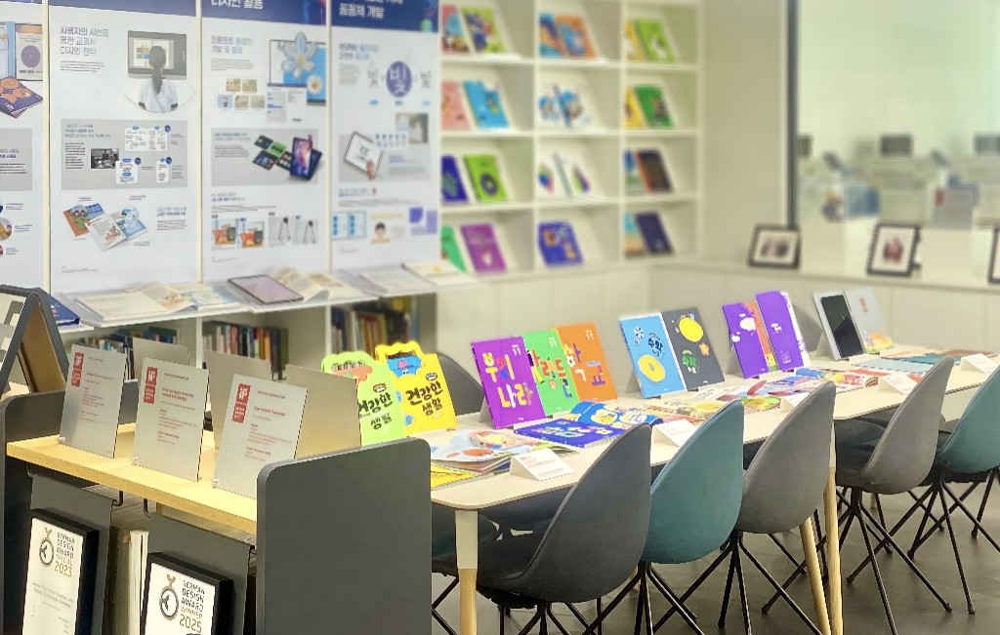
편집·디자인 역량과 연구 결과물을 보여준 라키비움 전시 공간
PART 4. ‘이번엔 꼭’이라는 마음
2월부터 10월까지, 버텨온 시간들
Q. 2월 프로젝트팀 결성부터 10월 현장 실사까지, 정말 숨 가쁜 시간이었을 것 같습니다. “이번만큼은 꼭 해내야 한다”는 마음으로 임하셨다고 들었는데요. 준비 과정에서 가장 기억에 남는 장면이나, 지금 돌아봐도 떠오르는 ‘고비’가 있었다면요?
욱 CP 돌이켜보면… 이게 고비였나 싶을 정도로, 이번에는 정말 합심이 잘됐던 프로젝트였던 것 같아요. 개발, HR, 재무, CC까지— 어디에 요청을 드려도 바로 도와주시고, 요청한 것보다 더 얹어 주시는 경우도 많았고요. ㅎㅎ
그래도 굳이 하나를 꼽자면, 역시 제안서였던 것 같아요. 정말… 뼈를 깎는 고통이었죠. 이번 제안서는 기존에 우리가 만들던 제안서랑 완전히 달랐어요. Another level이라고 해야 할까요. 양태회 CP님이 하셨던 말씀이 아직도 기억나요. 알베르토 자코메티 작품 이야기— 핵심만 남긴, 즉 뼈대만 남긴 조각처럼 가야 한다고요.
윤석 CP 해결책을 찾다 보니 그렇게 된 거죠. 사실 세계적으로 좋은 디자인들을 보면, 디자인을 먼저 잡고 그에 맞춰 내용을 구성하는 경우가 많아요. 그런데 교과서 작업에서는 보통 그렇게 안 하거든요. 이번에는 그걸 과감히 버렸어요. 핵심만 남기고, 나머지는 내려놓는 선택이었죠.
아름 CP 이런 과정은 PT에도 그대로 드러났던 것 같아요. 우리 디자인이 타사와 다른 점은, 편집 요청을 그냥 ‘오퍼레이팅’처럼 처리하지 않는다는 거예요. 디자인 역량이 높다는 건 단순히 예쁘게 만드는 게 아니라, 전략적으로 사고할 수 있다는 의미라고 생각해요. 늘리는 건 쉬운데, 줄이는 건 정말 어렵거든요.
PART 5. 역할이 모여 하나가 되다
제안서 · PT · 인쇄 · 디자인, 각자의 자리에서
Q. 김욱 CP님은 실사의 출발점인 제안서를 총괄하셨죠. 심사위원에게 비상의 ‘진정성’을 전달하기 위해 어떤 부분에 가장 신경 쓰셨나요?
욱 CP 가장 중요하게 생각했던 건 “이 제안서를 펼쳤을 때, 심사위원이 불편하지 않아야 한다”는 점이었습니다. 휙휙 넘겨보더라도 중요한 메시지가 자연스럽게 눈에 들어오게, 그리고 “아, 이 회사는 준비가 되어 있구나. 더 보고 싶네.”라는 감정이 들도록 만드는 것이 목표였어요.
Q. 아름 CP님은 실제 발표와 본사 실사를 총괄하셨죠. 심사위원 앞에서 비상의 철학을 말해야 했던 순간, 그 자리는 어땠나요?
아름 CP PT는 사실상 사업 관점에서 평가위원들과의 첫 대면이었어요. “무엇을 말할 것인가”보다도 “이 자리에서 비상을 어떻게 인식하게 할 것인가”가 더 중요하다고 느꼈습니다. 그래서 선택한 방식이 서사를 부여하는 것이었습니다. 비상이 걸어온 길, 교육 회사로서 성장해 온 과정을 하나의 이야기처럼 풀어내자는 방향이었어요.
실사 현장은 정말 엄숙합니다. 그래서 저희가 가장 중요하게 생각했던 태도는 과장하지 않는 진정성, 그리고 차분함이었습니다. “우리는 평소에도 이렇게 일합니다”라는 태도가 드러나게 하자는 기준이었어요.
Q. 진안 CP님은 인쇄 품질과 생산 공정을 담당하셨는데, 이번 실사 준비 과정에서 가장 까다로웠던 포인트는 무엇이었나요?
진안 CP 현재 심사위원 구성상 인쇄나 생산 공정의 전문가가 아닌 분들이 많이 계시기 때문에, 전문적인 설명은 오히려 이해를 돕기보다 어렵게 느껴질 수 있다고 판단했습니다. 그래서 복잡한 설명보다는 비상과 테라북스의 강점을 쉽고 직관적으로 보여주는 것이 중요하다고 생각했습니다.
테라북스 현장 실사 과정에서, 화장실을 포함해 눈에 잘 띄지 않는 공간까지 비상이 통합교과서를 만들고 싶다는 메시지를 준비해 두었는데요. 실사를 마치고 나가시던 평가위원분들 중 한 분께서 사소한 부분까지 정성을 다해 준비하신 것 같다고 말씀해 주신 순간이 가장 인상 깊게 남아 있습니다.
Q. 윤석 CP님은 디자인 전반을 담당하셨는데요. 제안서, 연구물, PT, 실사 공간까지 하나의 디자인으로 연결되게 하시면서 가장 중요하게 가져간 기준은 무엇이었나요?
윤석 CP 가장 중요하게 생각했던 건 “전체가 하나로 보이게 하자”는 기준이었어요. 제안서부터 PT, 연구물, 그리고 실사 공간까지 모두 같은 결, 같은 언어로 이어지는 구조를 만들고 싶었습니다. 이번에는 처음부터 국정 수주 전 과정을 관통하는 디자인 아이덴티티를 먼저 설정했습니다.
PART 6. ‘비상답다’는 말의 의미
팀워크와 협업의 결정적 순간들
Q. 국정교과서라는 건 한 팀의 결과물이 아니라, 비상교육 전체의 역량이 모여 만들어진 결과라는 생각이 들어요. 이번 실사 준비 과정에서 ‘비상의 팀워크’가 가장 잘 느껴졌던 순간이 있었나요?
윤석 CP 스튜디오 Cell, 미디어 Cell을 포함해서 겉으로 드러나지 않는 많은 분들이 정말 많이 도와주셨어요. 결국엔 모든 팀의 마음이 하나였던 순간들이 모여 만들어진 결과였어요.
욱 CP 비상교육 CP님들 모두 각자 이미 맡고 있던 업무가 있는 상황에서 갑자기 추가로 들어오는 일들이 정말 많으셨을 것 같습니다. 누군가 주저하거나 “이건 제 일이 아닙니다”라고 말하는 순간이 없었어요. 모두가 자기 일처럼 덤벼들다 보니 자연스럽게 팀워크가 만들어졌던 것 같습니다.
Q. 협업의 과정에서 기억에 남는 동료나 고마움을 전하고 싶은 분이 있다면요?
진안 CP 그중에서도 특히 힘든 상황에서도 늘 웃음으로 이해해 주시고, 저희를 응원해 주시며 옆에서 좋은 의견을 주셨던 공아름 CP님, 소병업 CP님께 정말 감사드립니다. 또 생산 파트 제안서 내용을 책임지고 정리해 주신 류지운 CP님, 그리고 김욱 CP님께도 특별히 감사한 마음이 있어요.
PART 7. 내일의 주인공들에게 전하는 응원
"우리의 진심은 이어집니다"
Q. 마지막으로, 이번 성과를 통해 사내 구성원들이 함께 기억했으면 하는 메시지가 있다면요?
욱 CP 이번에 가장 크게 느낀 건, 비상교육의 CP님들 모두가 정말 대단하고 멋지다는 점입니다. 각자 맡은 본업이 있음에도 협업 요청이 오면 망설임 없이 성심을 다해 주셨습니다. 그렇게 함께해야 서로 성장하고, 회사는 물론 개인도 함께 커갈 수 있다고 믿습니다.
아름 CP 이번 경험을 통해 배움과 학습은 정말 끊임없는 과정이라는 걸 다시 느꼈어요. 라키비움 유리창, 줄눈, 조명 하나까지도 눈에 안 보이는 디테일까지 책임져 주신 분들께 이 자리를 빌려 꼭 감사 인사를 드리고 싶습니다.
윤석 CP 솔직히 말씀드리면 저는 아직 많이 부족한 사람이라고 생각해요. 😅 그런데 이번 프로젝트를 하면서 정말 많이 배우고 성장한 시간이었습니다.
Q. 다음에 국정 발행 평가를 준비할 후배들에게 ‘이건 꼭 기억해주세요’ 하고 전하고 싶은 말이 있다면요?
욱 CP 국정 발행 평가는 기한이 정해져 있지 않은 여정 같아요. 그래도 순간순간 최선을 다하다 보면 결국은 끝이 옵니다. 앞이 안 보이는 안개 속 같아도요. 😄
진안 CP 양태회 CP님께서 자주 말씀하시는 ‘진인사대천명(盡人事待天命)’이라는 말이 떠오릅니다. 사람이 할 수 있는 일을 다한 후, 하늘의 뜻을 기다린다. 목표는 단 하나였습니다. “우리가 할 수 있는 건 다 해보자.” 그 과정에서 얻은 성취감이 제게는 가장 큰 배움이었습니다.
📰 비바人터뷰 vol.6
"우리는 어떤 기준으로 국어 교과서를 만들었을까"
2022 개정 교육과정 비상 중고등 국어 교과서
어떤 성과에는 숫자로 보이지 않는 시간이 담겨 있습니다. 결과가 나오기까지의 고민, 수없이 오갔던 선택, 그리고 그 선택을 함께 감당했던 사람들.
이번 비바人터뷰는 최근 중고등 국어 교과서 발행과 채택 성과를 계기로, 그 결과가 만들어지기까지의 과정과 협업의 이야기를 기록하고자 시작되었습니다. 무엇을 만들었는지를 소개하기보다, 비상에서는 어떤 기준으로 일이 만들어지는지, 그리고 그 기준을 지키기 위해 각자의 자리에서 어떤 고민을 했는지를 나누고 싶었습니다.
중고등 국어 교과서는 비상이 어떤 회사인지, 그리고 교육을 어떤 태도로 대하는지를 가장 잘 보여주는 영역이기도 합니다. 기획, 집필, 편집, 디자인, 마케팅, 현장까지 이어진 보이지 않는 연결과 선택의 순간들을 차분히 돌아봅니다.
이장근 CP (중고등국어교과서 Core) — 현재 중고등 국어 교과서 교재 개발을 총괄하고 있는, 꿈을 편집하는 에디터 이장근입니다.
황진실 CP (국어 1 Cell) — 비상교육에서 중등 국어(박현숙) 교과서, 교재, 교수 자료 개발을 맡고 있습니다.
이수미 CP (국어 2 Cell) — 비상교육에서 중등 국어(박영민) 교과서와 교재 및 교수 자료를 개발하고 있습니다.
하명진 CP (국어 3 Cell) — 비상교육에서 고등 공통 국어 교과서를 개발하였고, 현재는 고등 국어 선택 과목 교재, 교수 자료 개발을 담당하고 있습니다.
박수현 CP (국어 4 Cell) — 비상교육에서 고등 공통 국어 교과서를 개발하였고, 현재는 고등 국어 선택 과목의 교재와 교수 자료를 개발하고 있습니다.
김인영 CP (국어 5 Cell) — 비상교육에서 국어 교과서/교재/교수자료 등을 개발하고 있습니다.
PART 1. 하나의 교과서가 만들어지기까지
Q. 이번 2022 개정 교육과정 준비 과정에서, Core 리더로서 어떤 역할을 맡아 중고등 국어 교과서 개발을 조율해 오셨나요?
이장근 CP 2022 개정 교육과정이 들어서면서 중고등 국어 교과서 조직은 중등 1·2Cell, 고등 3·4·5Cell로 구성되어 있고, 저는 중고등 국어 교과서, 교재, 교수자료 개발을 총괄하고 있습니다. 이번 2022 개정 교육과정 개발을 준비하면서 흩어져 있던 조직원들을 중고등 국어 교과서 개발이라는 목표로 조직 개편이 이루어졌고, 그 과정에서 중고등 국어 교과서 전반을 아우르며 개발을 조율하는 역할을 맡게 되었습니다.
현재는 중등과 고등 학교급별로 구분하여, 현장 교사 중심의 팀과 교수님 중심의 팀으로 나누어 운영하고 있지만, 상황과 과제에 따라 유동적으로 협업하고 있습니다. 한 사람의 역할이 고정되기보다는, 필요한 지점마다 서로 연결되고 보완하며 움직이는 구조라고 볼 수 있을 것 같습니다.
Q. 이번 채택 결과를 통해, 중등 국어 교과서를 개발하며 해왔던 고민과 선택이 어떻게 확인되었다고 느끼셨나요?
이수미 CP 이번 결과를 보면서 가장 먼저 든 생각은 “현재 채택률도 훌륭하지만, 다음 교육과정 때는 더 기대가 된다”는 마음이었습니다. 15 개정 당시에는 중등 라인의 채택 결과가 아쉬웠던 경험이 있었기 때문에, 이번에는 그 경험을 바탕으로 새롭게 도전한다는 의미가 컸습니다.
황진실 CP 결과적으로는 두 종 모두 합격하였고, 채택률 역시 지금까지의 성과를 놓고 보면 가장 좋은 결과라고 할 수 있을 것 같습니다. 교과서라는 것이 3년에 걸쳐 현장에 적용되는 만큼, 이 결과가 갖는 의미는 더 크다고 느꼈어요.
Q. 이번 결과를 만들어내는 데 있어, 고등 국어 교과서 개발 과정에서 가장 결정적이었던 힘은 무엇이었다고 보시나요?
하명진 CP 교과서를 개발하는 과정에서 현장에서 어떤 반응이 나올지를 계속해서 고민했고, 그 고민을 바탕으로 검토하고 수정하는 과정을 반복해 왔습니다. 채택률이라는 결과를 통해 우리가 고민했던 방향이 틀리지 않았다는 확신을 얻을 수 있었고, “선생님들과 우리의 고민이 통했다”라는 느낌이 들었습니다.
박수현 CP 고등 교과서는 전반적으로 채택률이 비슷하게 나오는 경우가 많은데, 이번에는 국어 두 종 모두 고르게 좋은 결과를 얻었습니다. 15 개정 때는 현장교사팀의 채택률은 상대적으로 높고, 교수님팀의 채택률은 낮았던 경험이 있었는데, 22 개정에서는 두 팀의 결과가 거의 비등하게 나왔습니다.
김인영 CP 고등 선택 검정 3종, 인정 4종 모두 성과가 좋았고, 돌이켜보면 처음부터 여러 조건이 잘 맞아떨어졌던 프로젝트였습니다. 문학 교과서의 경우에는 15 개정이 워낙 잘 만들어져 있었기 때문에 그 성과를 넘어설 수 있을지에 대한 고민이 컸던 것도 사실이에요. 그럼에도 퍼센티지로 보았을 때는 역대 최고치의 결과가 나왔습니다.
Q. Core 리더의 시선에서 볼 때, 이번 중고등 국어 교과서 성과를 가능하게 한 가장 큰 요인은 무엇이었다고 보시나요?
이장근 CP Core 리더로서 정말 뿌듯합니다. 기획부터 편집, 예산까지 처음부터 리더 CP님들이 거의 전 과정을 끌고 오셨고, 마케팅 자료까지도 직접 챙기셨습니다. 정말 말 그대로 ‘처음부터 끝까지’ 책임지고 만들어주셨습니다.
이번 교과서 개발 과정에는 경험이 있는 분들과 경험이 적은 분들이 함께 섞여 있었다는 점도 컸습니다. 특히 신입도 많았는데, Cell 리더 CP님들이 옆에서 코칭하고 계속 가이드를 주셨기 때문에 처음 합류하신 분들이 빠르게 적응하고 함께 갈 수 있었습니다.
PART 2. 보이지 않는 개발의 현실
Q. 교과서를 만드는 과정에서, 외부에서는 잘 보이지 않지만 특히 많은 고민과 조율이 필요했던 지점은 무엇이었나요?
이수미 CP 국어2 Cell은 구성원 절반 정도가 새로 온 상황이었고, 원고를 계속 점검하고, 피드백을 주고, 수정하고, 서로 크로스체킹하면서 의견을 주고받는 방식으로 팀의 완성도를 끌어올렸습니다.
김인영 CP 교과서를 만들다 보면, 저자분들이 써오는 원고를 그대로 사용할 수 없는 경우가 생각보다 많습니다. 원석과 같은 저자 선생님의 원고를 바탕으로 보석 같은 완성된 결과물을 만들어 내기까지에는 편집자들의 수많은 고민과 노력이 들어갑니다.
박수현 CP 이번 과정에서 가장 크게 느낀 어려움은 저작권 이슈였습니다. 문학 작품이나 비문학 지문을 사용할 때, 저작권에 대한 처리를 반드시 함께해야 하는 상황이었기 때문입니다. 개발 과정 중간에 흐름이 바뀌면서 기존 제재가 폐기되는 경우도 있고, 그럴 때마다 새로 찾은 제재에 대해 다시 저작권을 확인해야 했습니다.
김인영 CP 고등 교과서의 경우, 두 명이 한 책을 맡는 구조로 진행되었고 인정 교과서를 처음으로 동시 개발하는 상황이었습니다. Cell 리더들은 혼자 3~4인분 이상의 몫을 해야 했고, 1년 차에는 집에서 많이 울기도 했습니다. 그럼에도 이 과정을 끝까지 완주할 수 있었던 것은 “결국 우리가 책임져야 할 교과서”라는 인식이 팀 안에 공유되어 있었기 때문이라고 생각합니다.
Q. 여러 선택지 중에서, Core 리더로서 특히 판단이 쉽지 않았던 결정의 순간이 있다면요?
이장근 CP 국어 교과서는 두 종을 동시에 개발하고 있습니다. 현실적으로 디자인을 모두 내부에서 진행하기는 어려워 하나는 내부 디자인, 하나는 외주 디자인으로 진행할 수밖에 없는 상황이었습니다. 내부 디자인을 원하는 마음과 회사 전체의 리소스를 고려해야 하는 판단 사이에서 어디에 기준을 두어야 하는지를 계속 고민해야 했습니다.
Q. 교과서 개발 과정에서 팀 구성과 인력 배분을 결정하는 데 가장 고민이 컸던 지점은 무엇이었나요?
이장근 CP 교과서는 집필자의 역량도 중요하지만, 더 중요한 것은 편집자의 역량과 열정이라고 생각합니다. 기획부터 편집, 마케팅, 그리고 각종 부수적인 업무까지 모두 함께 진행해야 하는 편집자의 역량과 열정이 곧 교과서 질로 이어진다고 생각합니다.
PART 3. 우리가 끝까지 지키고 싶었던 기준
Q. 여러 선택지 중에서 “이 방향만은 반드시 지키자”라고 생각했던 기준이 있었다면요?
황진실 CP 저희가 개발 과정에서 가장 중요하게 지켰던 기준은 단연 현장성이었습니다. 배움이 교실 안에서 끝나는 것이 아니라, 현장을 넘어 학생의 삶으로 확장되는 국어 교과서가 되어야 한다는 기준을 개발 전 과정에서 계속 붙잡고 있었습니다.
교과서에 대한 현장 검토를 여러 차례 진행한 결과, 500명 이상의 현장 교사에게 직접 검토를 받으면서 “현장에서 정말 유용하게 쓰일 수 있는 교과서인가”를 끝까지 확인했습니다.
하명진 CP 저희 Cell 역시 현장성을 최우선 기준으로 삼았습니다. 아무리 잘 만든 교과서라도 교실에서 구현이 불가능하다면 좋은 교과서라고 볼 수 없다고 생각했습니다.
김인영 CP 저희 Cell에서 가장 중요하게 생각했던 기준은 교과서의 ‘새로운 전형’을 만들어보자는 것이었습니다. 15 개정에 있던 것들을 그대로 반복하기보다는, 매번 새롭게 기획해서 넣고, “여기까지면 됐다”에서 멈추지 말자는 기준이 분명했습니다.
이수미 CP 학생 촬영 시 포즈나 교복 디자인, 컬러 선택부터 사진 촬영 모델 선정까지 저희 Cell에서 직접 챙겼고, 교수 자료까지 포함해 정말 1부터 10까지 모두 다루는 구조였습니다. 교과서는 결국 종합예술이라는 생각으로 임했습니다.
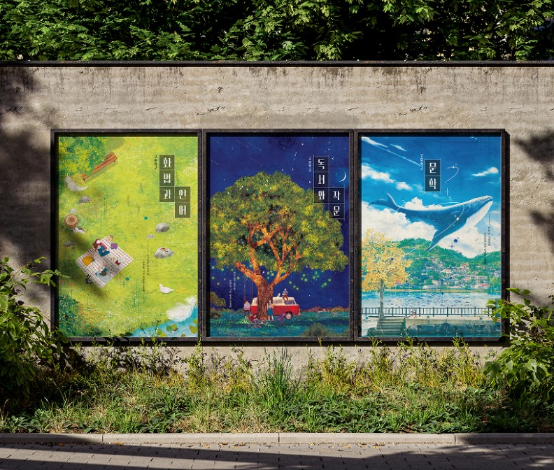
CC와 함께 만든 고등 국어 교과서 표지 — 정성이 들어간 디자인
Q. 이번에는 CC와의 협업 방식에서도 변화가 있었다고 들었습니다. 이전과 비교했을 때 가장 달라진 점은 무엇이었나요?
박수현 CP 교과서를 만들면서 디자인 부분에서 CC(크리에이티브 디자인 연구소)의 역할이 굉장히 컸습니다. “정성이 들어간 교과서는 티가 난다”라는 말처럼, 디자이너의 고민과 선택이 그대로 드러나는 교과서를 만들고자 했습니다.
김인영 CP 예전에는 개발부에서 기획을 완료한 샘플을 발주하는 방식이었다면, 지금은 콘셉트 단계부터 함께 고민하는 방식으로 바뀌었습니다. 특히 마지막 페이지업 단계에서 지면을 더 돋보이게 만드는 작업을 해주시며 아트디렉터 역할을 해주셨습니다.
이수미 CP 외주 디자이너분들 역시 굉장히 성실하게 함께해 주셨습니다. 심지어 디자이너분의 자녀가 저희 교과서를 채택해 사용하는 경우도 있어 더 애정을 가지고 작업해 주신 부분도 있었습니다.
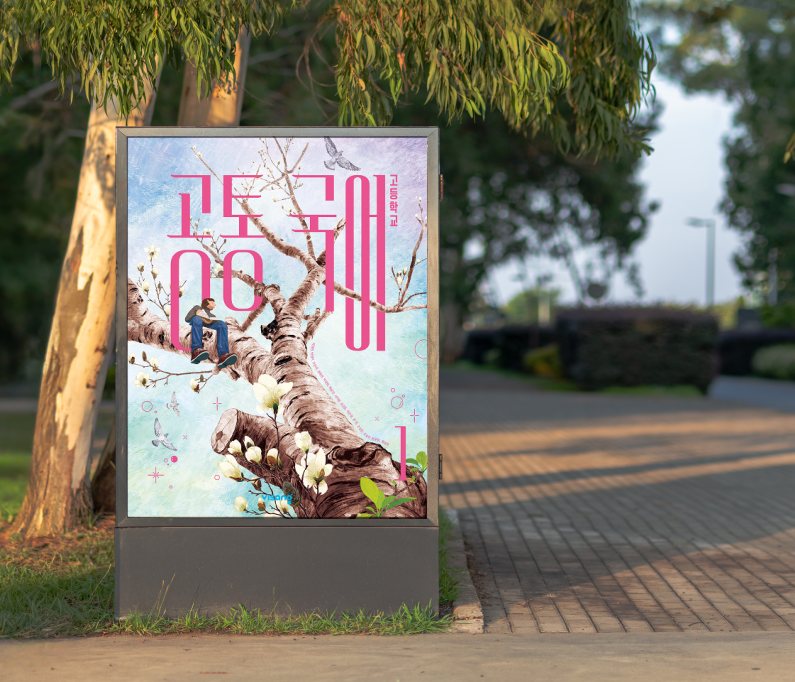
고등 국어 1 — 나무 위에서 책을 읽는 학생의 표지 디자인
PART 4. 비상에게 국어란 무엇인가
Q. 중고등 국어 교과서는 비상이라는 회사에 어떤 의미를 갖는 과목이라고 생각하시나요?
이장근 CP 모두 아시다시피 비상은 ‘국어’에서 시작한 회사입니다. ‘한끝’으로 출발했죠. 국어는 비상의 시작이자 프라이드와 맞닿아 있는 과목입니다. 국정 교과서 시절까지 국어는 비상의 핵심 과목이었고, “비상은 국어를 잘하는 회사”라는 인식이 분명히 있었습니다.
사실 비상 교과서 역사에서 국어는 어쩌면 아픈 손가락에 가까운 과목이었습니다. 처음으로 떨어졌던 과목도 국어였고, 이후에도 계속해서 쉽지 않은 결과를 마주해 왔습니다. 그런데 이번 22 개정에서는 국어가 모두 합격했습니다. 그동안 이어져 오던 징크스를 처음으로 깬 해였습니다.
Q. 이번 경험을 통해 ‘교과서를 만든다는 일’에 대해 새롭게 보게 된 점이 있나요?
이장근 CP 교과서의 최종 목적지는 선생님과 학생이 있는 교실이기 때문에 교과서의 학습 흐름이 교실에서 어떻게 활용될지 상상해 보는 것이 중요합니다. 이번 교육과정에서 교과서에 QR이 도입되어 제도적으로나마 이런 고민을 할 수 있는 계기가 마련되었다고 생각합니다.
박수현 CP 교과서를 만드는 일도 새롭지만, 다만 매번 다른 방식으로 다른 어려움이 발생한다는 사실이 더 새롭습니다. : )
김인영 CP 교과서를 만드는 일이 새로워진다기보다는 우리에게 요구되는 역할이 점점 더 많아진다는 생각이 듭니다. 우리가 단순한 편집자가 아니라 모든 원고를 새롭게 생산하는 원천 콘텐츠 생산자라는 사실을 우리는 이미 알고 있습니다.
하명진 CP 교과서를 여러 번 만들었지만 그럼에도 불구하고 매번 새롭게 배울 점이 있습니다. 저자와 여러 편집자, 디자이너, 수많은 검토 선생님 등 정말 많은 사람의 최선과 진심이 모인 책이라는 것을 새삼스럽지만 다시 한 번 깨달았습니다.
PART 5. 함께 만든 사람들에게
Q. 마지막으로, Core 구성원들에게 꼭 전하고 싶은 말이 있다면요?
박수현 CP 경험하는 것만으로도 배우고 성장하는 기회를 얻을 수 있습니다. 지난 교육과정 때와는 달리, 교과서 개발과 더불어 이것저것 해야 할 업무의 종류와 분량이 더 많았는데 각자의 자리에서 열심히 해 주어서 고마웠습니다. : )
황진실 CP 교과서, 교재, 교수자료 개발 등 동시에 여러 업무를 해야 하는 상황에서 같이 최선을 다해 주어 고맙다는 말을 가장 먼저 하고 싶습니다. 일이 힘들어도 같은 방향을 보고 함께 가는 동료가 있으면 끝까지 해 낼 수 있다는 걸 저도 배운 시간이었습니다.
김인영 CP 교육과정이 바뀔 때마다 우리는 얼마나 많은 사람들의 피땀 어린 수고가 들어가는지 압니다. 스스로는 물론 주변의 모든 상황을 컨트롤하며 한 사이클을 버텨낸 우리에게 무한한 신뢰와 깊은 감사를 전합니다.
하명진 CP 우리가 하는 일은 절대 혼자 할 수 있는 일이 아닙니다. 각자의 자리에서 맡은 일에 애정을 지니고 끝까지 최선을 다해 준 모든 시피님들께 감사드립니다.
이수미 CP 각자의 자리에서 열심히 해 주어서 고마웠습니다. : )
이장근 CP 교과서든, 교재든, 교수자료든 교육 콘텐츠를 개발하는 본질은 같다고 생각합니다. 모든 일이 다 그렇지만 내가 하는 일의 가치와 의미가 없다면 그 일을 오래 하기 힘들다고 생각합니다. 스스로 이 업을 하는 데 필요한 내적 동기도 만들어 나갔으면 하는 바람으로 마무리합니다.
📰 비바人터뷰 vol.7
"시피님의 퇴근길은 어떤 색인가요?"
퇴근길을 특별하게 채우는 세 동호회 — 원모어, 비상턴, 다람지
반복되는 업무와 모니터 앞에서 보낸 하루, 퇴근 셔틀에 몸을 실을 때면 어딘가 허전한 마음이 들진 않으셨나요? 여기, 같은 사무실 안에서 전혀 다른 에너지를 만들어가는 사람들이 있습니다.
땀방울 섞인 우렁찬 기합 소리로 스트레스를 날려버리는 🏋️ 원모어, 가벼운 셔틀콕에 일상의 고민을 얹어 멀리 날려 보내는 🏸 비상턴, 그리고 뜨거운 함성 속에 낭만을 찾아 떠나는 ⚾ 다람지까지.
비상인들의 평범한 일상을 특별한 활력으로 채워가는 세 개의 동호회를 만났습니다. 그들이 전하는 '진짜 비상하게 노는 법', 지금 바로 시작합니다!
홍현우 CP (🏋️ 원모어 리더, 사회 5 Cell) — 윤리와 도덕 콘텐츠를 개발하고 있습니다.
이소민 CP (🏋️ 원모어 총무, T-러닝 컴퍼니 통합영업 Core) — 실적 및 수수료 정산을 맡고 있습니다.
박준영 CP (🏸 비상턴 리더, 티칭사업2 Cell) — 교육적으로 나은 세상을 만들어 가고 있습니다.
이병주 CP (⚾ 다람지 리더, 교과서정책 Cell) — 내 일이네… 싶은 일을 하고 있습니다.
1. 우리 팀의 '한 줄 정체성'
Q. 길 가다 누가 "그 동호회 뭐 하는 데예요?"라고 묻는다면, 0.1초 만에 나올 대답은?
현우 CP "같이 건강해지는, 말 그대로 '원모어' 동호회"죠. 저희는 주 2회, 회당 2시간을 기본으로 달려요. 요즘 수요가 폭발해서 한 타임 최대 효율 인원을 넘길 때가 많아요. 마음 같아서는 주 5회 풀가동도 고민 중입니다. 신규 회원 오티부터 그룹 PT까지, 거의 '무료 헬스장 전대' 수준으로 운영해요.
소민 CP 운동 입문은 함께, 꾸준한 운동은 혼자서도 가능하게 만들어주고 싶은 자립형 동호회예요.
준영 CP "내일 칠 거면 오늘 칩시다!" 비상턴은 '지금 이 순간' 시작하기 딱 좋은 곳이에요. 뭐든 오늘이 최적의 시기거든요. 날씨도 좋은데 내일로 미루지 말고, 오늘 바로 셔틀콕과 스트레스를 함께 날리면 좋겠어요. 제가 주말 6시간, 주 6회를 칠 정도로 진심인데, 이 뜨거운 에너지를 함께 나누고 싶습니다!
병주 CP "서로 다른 유니폼을 입고 있어도, 같은 열정을 공유하는 '원팀'" 응원하는 팀은 제각각이라 각자 자기 팀 유니폼을 입고 모이지만, 스포츠를 사랑하는 마음만큼은 하나거든요. 야구를 가장 많이 보러 가지만 축구, 농구, 국가대표 경기까지 종목을 가리지 않습니다.
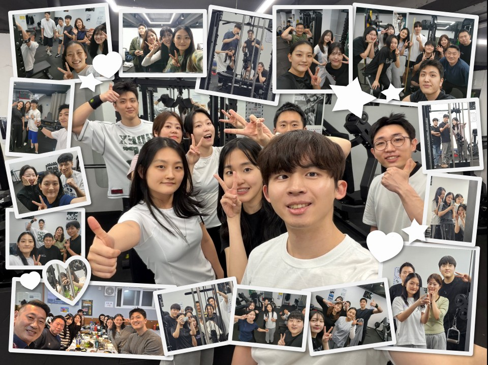
원모어 활동 현장 — 함께 땀 흘리며 건강해지는 시간
2. 멤버 자랑 타임
Q. 우리 멤버들, 이런 점이 정말 최고입니다! 슬쩍 자랑 한마디씩 해주신다면?
현우 CP 우리 멤버들 사이에는 특유의 긍정적이고 생기 있는 분위기가 있습니다. 억지로 이끌려 오는 것이 아니라 스스로 참여하고자 하는 마음에서 비롯된 에너지이기 때문에 자연스럽게 활기가 살아나요. 함께할수록 더 힘이 나고 몰입하게 되는 환경이 형성돼요.
준영 CP 저희 멤버들은 건강도 건강이지만, '내가 하고 싶었던 것을 하며 즐기는 행복'에 진심인 분들이 많아요. 회원 90%가 초보자라 부담 없이 오셔도 되고요. 비상턴의 진짜 자랑은 '완벽한 풀세팅'이에요. 회비를 아껴서 사이즈별 전용 신발, 라켓, 셔틀콕까지 새것으로 다 구비해 뒀거든요. 운동복만 입고 오세요. 제 개인 라켓까지 평생 무료로 대여해 드릴게요. 깨뜨리지만 않으면 됩니다! 😀
병주 CP 한마디로 '의리 있는 사람들'이에요. 같이 직관을 다니면서 새로운 팀의 팬이 되기도 하고, 꼭 팬이 아니더라도 경기장의 활기찬 분위기와 시원한 맥주 한 잔을 즐기는 라이트한 분들도 많습니다. 특히 저희는 티켓팅 실력자들이 많아요. 인원이 많아질수록 더 좋은 자리를 함께 즐길 수 있다는 게 저희 동호회만의 든든한 자랑거리입니다.
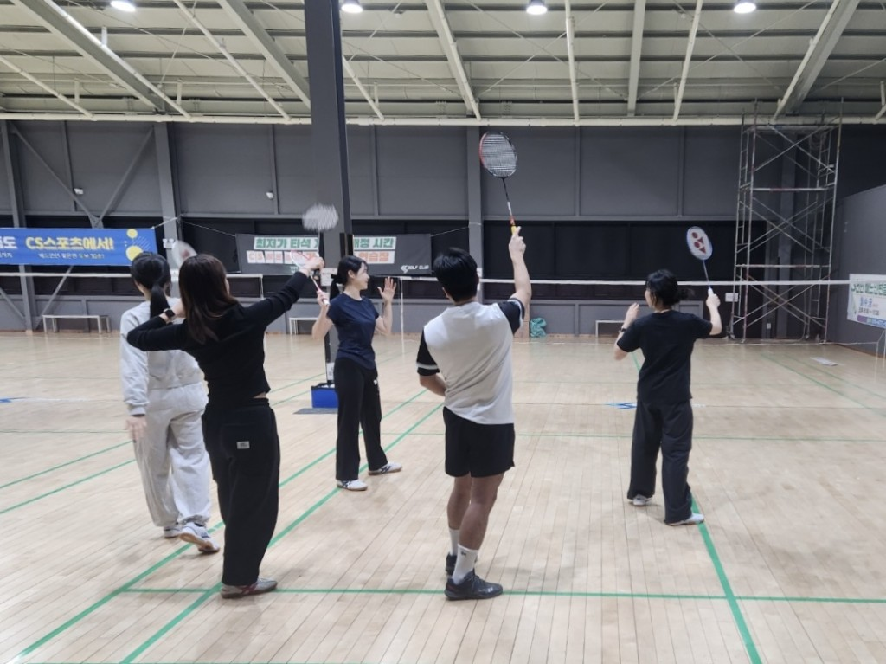
비상턴 활동 현장 — 셔틀콕과 함께 날려 보내는 스트레스
3. 우리 팀만의 필살기
Q. "이것만큼은 우리가 비상 원탑!" 다른 동호회는 절대 못 따라올 우리만의 매력은?
현우 CP 단연 '활동량'이죠. 매주 두 번씩 만나는 성실함이 저희의 무기입니다. 2026년 1분기만 해도 25번의 활동이 있었는데, 매번 3명~12명이 모여 운동하고 있으니, 비상에서 이만큼 자주, 많이 모이는 곳은 드물걸요?
소민 CP 또 하나의 매력은 ‘소속감’입니다. 반기마다 멤버들만을 위한 ‘원모어 전용 굿즈’를 제작하고 있는데, 이 굿즈를 받으러 오셨다가 자연스럽게 운동에 입덕하시는 분들도 많습니다. 가끔 회식이나 야유회도 진행하며 멤버 간 단합도 탄탄하게 다지고 있습니다.
준영 CP 단연 '즐거운 운동 분위기'입니다. 비상턴은 승패에 연연하지 않아요. 실력과 상관없이 모두가 해피한 분위기에서 즐기는 게 진짜 중요하거든요. 한 번 모일 때 평균 15명 정도 나오시는데, 참석에 대한 부담이 전혀 없다는 게 비상턴의 가장 큰 자랑입니다.
병주 CP 다람지의 필살기는 '개인주의를 존중하는 자율성'입니다. 단체로 "으쌰으쌰" 해야 한다는 강박이나 간섭이 전혀 없어요. 스포츠 직관이라는 취미를 자신의 라이프 스타일에 맞춰 가장 라이트하게 즐길 수 있는 곳, 그게 바로 저희 다람지입니다.
4. 활동 중 가장 빛났던 순간
Q. 동호회 활동을 하며 가슴이 벅차오르거나, "아, 리더 하길 잘했다" 싶은 순간은 언제인가요?
현우 CP 운동에 전혀 관심 없던 분이 저와 식단도 공유하고 함께 뛰면서 건강에 눈을 뜰 때 가장 보람차요. 어느새 달라진 그 눈빛을 볼 때 리더로서 정말 뿌듯합니다.
준영 CP 다 같이 셔틀콕에만 집중하는 그 시간만큼은 모든 걱정이 사라져요. 그 '완전한 몰입'이 저에겐 큰 보람입니다. "운동을 하면 몸의 근육뿐만 아니라 마음의 근육도 늘어난다"고요. 몸이 힘들면 예민해지기 쉬운 일도 좋은 에너지로 웃으며 넘길 수 있게 되는 것, 그게 바로 운동의 힘 아닐까요? 😀
병주 CP 새로운 경기장에 갈 때마다 느끼는 특유의 설렘이 늘 기억에 남아요. 스포츠를 좋아한다는 건 결국 '낭만'을 찾는 일 같아요. 입구에서부터 시작되는 그 설레는 마음, 그 낭만을 멤버들과 공유하는 순간이 좋습니다.
5. 업무와 취미 사이의 시너지
Q. 동호회 활동이 단순히 노는 것을 넘어, 실제 업무에도 긍정적인 영향을 주나요?
현우 CP 확실히 도움이 됩니다. 몰입할 대상이 있다는 것만으로도 스트레스 관리가 되고, 회사에 정을 붙이는 강력한 요소가 되거든요. 같이 땀 흘리고 먹는 저녁 한 끼가 다음 날 업무의 원동력이 됩니다.
소민 CP 원모어에서 함께 운동했던 CP님을 업무로 만났을 때 "아, 그 동호회 시피님!" 하는 순간 심리적 장벽이 사라져서 소통이 훨씬 부드러워집니다.
준영 CP 업무적으로는 타 부서 시피님들과 소통할 때 최고의 아이스브레이킹 소재가 돼요. 개인적으로는 내 '체력의 최소 지점'을 알게 된 게 큰 수확입니다. 업무와 생활의 밸런스를 조절하는 데 정말 큰 도움이 됩니다.
병주 CP 다양한 부서 사람들이 모이다 보니 자연스럽게 타 부서 업무에 대한 이해도가 높아져요. 결국 사람이 친해지면 업무 속도와 수월성도 함께 올라가더라고요.
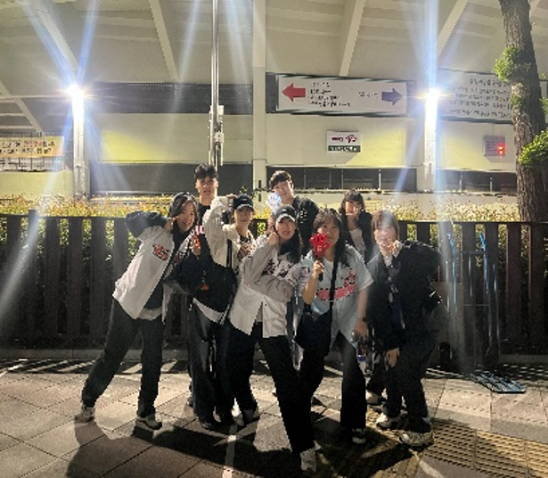
다람지 활동 현장 — 함성과 열기 속에서 나누는 낭만
6. 리더가 되어 마주한 ‘의외의 나’
Q. 동호회를 이끌어보기 전에는 미처 몰랐던, 자신의 새로운 모습을 발견한 적이 있나요?
현우 CP 제가 생각보다 '칭찬을 참 잘하는 사람'이더라고요. 멤버들이 무게 하나 더 들 때마다 진심으로 박수 쳐주는 제 모습을 발견했습니다.
소민 CP 저는 함께 운동할 때 더 인내심이 생기는 스타일이라는 걸 알게 됐어요. 멤버들 덕분에 제가 어떤 에너지를 가진 사람인지 객관적으로 돌아보는 계기가 됐습니다.
준영 CP 저는 배드민턴을 직접 치는 것도 좋아하지만, 리더를 맡으며 제가 '가르치는 일'에 강점이 있다는 걸 알게 됐어요. 비상턴에 운동하면서 에너지를 쓰려고 왔는데 CP님들 덕분에 오히려 에너지를 얻고 즐거운 자리에서는 행복이 충전되는구나 라는 것을 발견했습니다.
병주 CP 평생 운동을 직접 해온 '플레이어' 스타일이라, 처음엔 직접 뛰지 않고 보는 것만으로 행복할 수 있다는 게 신기했어요. "직접 해보지 않아도 보는 것만으로도 저렇게 행복할 수 있구나!"라는 걸 느끼며 스포츠를 향한 대중의 순수한 팬심을 새롭게 배우고 있습니다.
7. 선을 넘는(?) 의외의 인연들
Q. 회사 건물 안에서만 마주치던 동료가 '찐친'이 된 순간, 혹은 동호회 덕분에 맺어진 특별한 인연이 있나요?
현우 CP 업무적으로 전혀 관련 없는 분들을 평소에 만날 기회가 얼마나 있겠어요? 하지만 여기서 같이 땀 흘리다 보면 자연스럽게 통성명을 하게 되죠. 나중에 업무로 마주칠 때 그 친밀함은 엄청난 무기가 돼요.
준영 CP 동호회가 아니었다면 같은 층 분들도 마주칠 일이 거의 없었을 거예요. 개발팀 시피님들과 운동하며 "요즘 개발 쪽은 AI에 집중하고 있구나" 같은 생생한 현장 이야기를 듣다 보면, 우리 회사가 어떤 방향으로 돌아가고 있는지 입체적으로 알게 돼요.
병주 CP 동호회를 통해 타 컴퍼니 시피님과 정말 많이 친해졌어요. 특히 이번에 제가 19기 비바미 활동을 시작하게 된 것도 동호회 멤버분이 강력 추천해주신 덕분이에요.
8. 2026년, 우리가 꿈꾸는 '빅 피처'
Q. 2026년이 가기 전, 우리 동호회에서 꼭 이루고 싶은 '버킷리스트'가 있다면요?
현우 CP 연간 활동 인원 500명 돌파가 목표입니다! 그리고 멤버들과 '수육 마라톤' 같은 이색 대회에도 참여해보고 싶어요. 계절별로 여름엔 수상 레저, 겨울엔 설상 스포츠까지 정복하고 싶습니다.
소민 CP 헬스를 넘어 진정한 '종합 운동 동호회'로 거듭나고 싶어요. 이름처럼 포기하고 싶은 순간마다 서로 "원모어!"를 외쳐주며, 운동 실력은 물론 마음의 끈기까지 함께 기르는 팀이 되는 게 제 바람입니다.
준영 CP 올해는 인원을 더 늘려서 우리끼리 즐기는 자체 행사를 열어보고 싶어요. '셔틀콕 맞추기' 같은 가볍고 재미있는 활동들을 넣어서 마치 운동회 같은 축제를 만드는 게 제 꿈입니다.
병주 CP 단순히 관람만 하는 걸 넘어 직접 몸으로 부딪히는 활동을 해보고 싶어요. 특히 '여자 풋살팀'을 창단해서 제가 직접 감독을 맡아보고 싶다는 야심 찬 계획이 있습니다! 😃
9. 망설이는 CP님을 위한 '입덕 유혹'
Q. 가입 버튼 앞에서 고민 중인 비상인들에게, 마지막으로 강력한 '한 방'을 날려주신다면?
현우 CP 여러분, 회사 셔틀 타고 내려서 바로 운동하고 러쉬아워 피해 퇴근하는 이 완벽한 코스, 어디에도 없습니다. 공간 대절에 그룹 PT까지 무료인데 안 오실 이유가 있나요?
소민 CP 헬스장 가서 쭈뼛거렸던 초보자분들, 원모어로 오세요. 일단 한 번만 나와보세요, 저희가 '원모어'하게 만들어 드릴게요!
준영 CP 비상턴은 언제나 열려있습니다. 정말 몸만 오시면 됩니다! 업무에 지쳐 무표정으로 오셨더라도, 셔틀콕을 주고받다 보면 어느새 활짝 웃으며 퇴근하는 자신을 발견하실 겁니다. 보통 3주차 목요일에 모이고 있으니 꼭 기억해 주세요. : )
병주 CP 야구나 축구 좋아하시는 분들, 혼자 삭히지 마시고 경기장에서 같은 마음으로 동질감을 느끼며 시원하게 한마디 쏟아내고 나면 속이 다 후련해집니다. '함께 욕해줄(?) 의리 있는 동료들'이 있는 다람지로 오세요!